Spirality: طريقة جديدة لقياس زاوية التفاف الأذرع الحلزونية
الملخص
نقدّم شيفرة MATLAB المسماة Spirality، وهي طريقة جديدة لقياس زوايا التفاف الأذرع الحلزونية عبر ملاءمة صور المجرات مع قوالب حلزونية ذات التفاف معلوم. ويكون زمن الحساب عادة في حدود 2 دقائق لكل مجرة، بافتراض توافر ما لا يقل عن 8 GB من ذاكرة العمل. اختبرنا الشيفرة باستخدام 117 صورة حلزونية اصطناعية ذات زوايا التفاف معلومة، مع تغيير خصائص الحلزون ومعلمات الإدخال. وأعطت الشيفرة نتائج صحيحة لجميع الحلزونات الاصطناعية ذات الخصائص الشبيهة بالمجرات. وقارنّا كذلك نتائج الشيفرة بقياسات تحويل فورييه السريع ثنائي الأبعاد (2DFFT) لعينة المجرات القريبة التي يعرّفها DMS PPak. وقد تداخلت أشرطة الخطأ في Spirality مع أشرطة الخطأ في 2DFFT في 26 من أصل 30 مجرة. ويرتبط توافق الطريقتين بقوة بنصف قطر المجرة بالبكسلات وكذلك بقدرها في نطاق i، لا بالانزياح الأحمر، وهي نتيجة تتسق مع اكتمال تشكّل البنية الحلزونية في بعض المجرات على الأقل عند z=1.2، الذي لا تتجاوزه إلا قلة من المجرات في عينتنا. وتتضمن حزمة شيفرة Spirality أيضا GenSpiral، التي تنتج صور FITS لحلزونات اصطناعية، و SpiralArmCount، التي تستخدم تحويل فورييه السريع أحادي البعد لعدّ أذرع المجرة الحلزونية بعد تحديد التفافها. وتتاح حزمة الشيفرة مجانا على http://dafix.uark.edu/doug/SpiralityCode/.
1 المقدمة
تمثل زوايا الالتفاف الملائمة عالميا في المجرات موضوعا بحثيا مستمرا، لأنها ترتبط بخصائص يصعب تقديرها مثل كتلة الانتفاخ وكتلة الثقب الأسود المركزي (Seigar et al., 2008; Berrier et al., 2013). وتوجد عدة طرائق لتقدير زوايا الالتفاف، وتقع هذه الطرائق إجمالا ضمن فئات قليلة: أخذ عينات نقطية، وتحويلات فورييه السريعة أحادية البعد (1DFFT)، وتحويلات فورييه السريعة ثنائية البعد (2DFFT)، وملاءمة القوالب.
في طرائق أخذ العينات النقطية، تلاءم نقاط منفردة من الأذرع الحلزونية مع حلزونات رياضية، إما بملاءمة مباشرة بطريقة المربعات الصغرى (Ma, 2001) أو بحساب ظل ميل المنحنى في رسم ln(r) مقابل (Kennicutt, 1981). وتمتاز هذه الطريقة بأنها لا تتطلب إلا قدرة حاسوبية ضئيلة، إن تطلبت أصلا، لكنها تطرح أيضا معلومات قد تكون مفيدة حين تختزل الأذرع الحلزونية إلى مجموعة نقاط يقل عددها كثيرا عن عدد البكسلات في الصورة.
يتضمن 1DFFT (Grosbol & Patsis, 1998) تحليل الشدة السمتية على دوائر متحدة المركز مع المجرات المصححة الإسقاط. وتُرسم زوايا الطور للمركبة المتماثلة ذات 2 أذرع مقابل ln(r)، ثم يستخلص الالتفاف من الميل. ويحذف Kendall et al. (2011) المركبات المحورية التماثل بغية تعزيز البنية الحلزونية قبل إجراء 1DFFT على صناديق شعاعية.
تقوم طرائق 2DFFT (Saraiva Schroeder et al., 1994; Seigar et al., 2008; Davis et al., 2012; Gonzalez & Graham, 1996; Martínez-García et al., 2014) بتفكيك الأذرع الحلزونية إلى مجاميع من حلزونات لوغاريتمية ذات زوايا التفاف مختلفة. ويمكن تحديد عدد الأذرع الحلزونية بنمط التماثل الأقوى، مما يتيح تحليل الحلزونات ذات 3 أذرع والحلزونات ذات 4 أذرع، إضافة إلى الحلزونات الكبرى التصميم ذات 2 أذرع. غير أن 2DFFT، في المجرات ذات البنى الأكثر تعقيدا مثل المجرات الندفية، يهمل السمات غير المتماثلة التي قد تكون موضع اهتمام الباحث.
في طرائق ملاءمة القوالب، تُطابق الأذرع الحلزونية أو مقاطع الأذرع مباشرة مع حلزونات ذات التفاف معلوم. يستخدم Puerari et al. (2014) ملاءمة القوالب لتحليل أذرع منفردة أو مقاطع أذرع، مما يسمح بتحليل أكثر تفصيلا للبنية الحلزونية. ويستخدم (Davis & Hayes, 2014) خوارزمية متقدمة في الرؤية الحاسوبية لاستخراج مقاطع الأذرع الحلزونية ثم ملاءمة تلك المقاطع بمنحنيات رياضية.
1.1 العمل الحالي
وصف Saraiva Schroeder et al. (1994) طريقة لقياس زاوية التفاف الذراع الحلزونية في المجرة باستخدام تحويل فورييه سريع 2-الأبعاد (2DFFT). وتقيس هذه الطريقة قوة الأنماط المختلفة وزاوية تفافها معا (نمط 1 أذرع، ونمط 2 أذرع، إلخ) بين نصف قطر داخلي معين ونصف قطر خارجي معين. وينبغي التنبيه إلى أن النمط يصف في الواقع التماثل الدوراني لا العدد الفيزيائي للأذرع الحلزونية. أي إن نمط 2 أذرع يقيس المركبة المتماثلة بدرجة 180، وهي عادة، وإن لم يكن دائما، المهيمنة في الحلزونات ذات 2 أذرع. ويكون الالتفاف الناتج هو ذلك الموافق لأقوى نمط، على أمل أن يطابق العدد المرئي للأذرع. أما الأنماط الأضعف فتُهمل عموما.
استخدم Seigar et al. (2008) 2DFFT لاكتشاف ارتباط بين زاوية التفاف الذراع الحلزونية في المجرة وكتلة ثقبها الأسود المركزي. ولاحظ Davis et al. (2012) أن 2DFFT منحاز لمعانيا، بحيث يُخرج زاوية الالتفاف القريبة من نصف القطر الداخلي. لذلك أدخلوا نصف قطر داخليا متغيرا إلى طريقة 2DFFT. وتبيّن هذه الطريقة كميا مدى لوغاريتمية الأذرع الحلزونية. فهي تخرج التفاف أكثر مقطع شعاعي استقرارا (لوغاريتمية). كما تحدد أشرطة الخطأ بالنظر إلى حجم المقطع الشعاعي المستقر بالنسبة إلى نصف قطر المجرة، فضلا عن درجة لوغاريتمية ذلك المقطع المستقر. واستخدم Berrier et al. (2013) طريقة نصف القطر الداخلي المتغير في 2DFFT لتضييق الارتباط بين الأذرع الحلزونية وكتلة الثقب الأسود المركزي.
نقدم في هذه الورقة Spirality، وهي برمجية MATLAB تنفذ خوارزمية جديدة لقياس زوايا التفاف الأذرع الحلزونية اعتمادا على مطابقة أفضل ملاءمة لقوالب حلزونية رقمية. وخلافا لـ Davis & Hayes (2014) و Puerari et al. (2014)، اللذين يستخدمان طرائق ملاءمة القوالب لتحليل مقاطع محلية من الأذرع الحلزونية، يركز Spirality على الالتفاف العالمي الأفضل ملاءمة.
لا تعتمد طريقة Spirality على 2DFFT، ومن ثم لا تجبر المستخدم على اختيار نمط تماثل. وقد يكون ذلك ميزة للمجرات غير الكبرى التصميم. ونعتمد طريقة نصف القطر الداخلي المتغير لاختبار اللوغاريتمية وتحديد أشرطة الخطأ. كما نقدم GenSpiral.m، وهي شيفرة تولد بسرعة صور FITS لحلزونات اصطناعية ذات نطاق واسع من الخصائص. وهذه الحلزونات مفيدة لاختبار شيفرات قياس المجرات وتحليلها. وأخيرا نقدم SpiralArmCount.m، وهي شيفرة تستخدم تحويل فورييه السريع أحادي البعد (FFT) لعدّ أذرع المجرة الحلزونية بعد تحديد زاوية الالتفاف.
1.2 الدافع
يتمثل هدف رئيسي في تطوير Spirality في استخدامه لاختبار النظريات. فما تزال الأسباب الفيزيائية الكامنة وراء بنية الأذرع الحلزونية في المجرات القرصية موضع نقاش، ويبدو من الملائم البحث عن طرائق يستطيع بها القياس الفصل بين النظريات المتنافسة. ويستطيع Spirality تكميم جانبين مهمين من بنية الأذرع الحلزونية: فهو يقيس زاوية تفاف الأذرع من غير افتراض تماثل دوراني، ويستطيع عدّ عدد الأذرع.
تشير الصيغتان الرئيسيتان لنظرية موجة الكثافة، وهما النظرية النمطية ونظرية تضخيم التأرجح، إلى أن النجوم الفتية المولودة في الأذرع الحلزونية ينبغي أن تتقدم موجة الكثافة في القرص الداخلي وأن تتأخر عنها في القرص الخارجي، بسبب الدوران التفاضلي. وتكون النتيجة أن الغبار المكوّن للنجوم (الأشعة تحت الحمراء البعيدة) والنجوم الضخمة قصيرة العمر (الأشعة فوق البنفسجية البعيدة) ينبغي أن تكون أقل التفافا من النجوم الأقدم الأطول عمرا (البصرية وقريبة تحت الحمراء) (Grosbol & Patsis, 1998). أما نظرية المتشعبات، فتشير إلى أن زاوية الالتفاف ينبغي أن تكون مستقلة عن الطول الموجي (Athanassoula et al., 2010).
أظهر Pour Imani et al. (قيد الإعداد) أنه، لعينة تضم 16 مجرة، تكون زاوية الالتفاف في فوق البنفسجي البعيد (151 nm) مساوية لزاوية الالتفاف في تحت الأحمر البعيد (8.0um)، وأن كلا هذين الالتفافين أكثر انفراجا منهما في النطاقات البصرية والقريبة من البصرية. وتدعم هذه النتيجة بقوة نظرية موجة الكثافة النمطية ونظرية تضخيم التأرجح على حساب نظرية المتشعبات.
وللتمييز بين نظرية موجة الكثافة النمطية ونظرية تضخيم التأرجح، يلزم النظر عن كثب في تنبؤاتهما على الترتيب. فقد لاحظ Berrier & Sellwood (2015) و D’Onghia (2015) أن تضخيم التأرجح يقتضي أن القرص الأعلى كثافة لا يستطيع دعم أنماط متعددة الأذرع، مع m3. وبوجه عام، ينبغي أن يكون هناك ارتباط بين عدد الأذرع الحلزونية وكثافة القرص. ونسعى إلى دراسة هذه الادعاءات باستخدام SpiralArmCount، وهو جزء من حزمة Spirality يستطيع عدّ أذرع المجرة بطريقة بسيطة ومتينة، وربما تكون أفضل من طريقة 2dFFT، مع أن الأخيرة ملائمة في الواقع لهذه المهمة.
ويتعلق تطبيق آخر لاختبار النظريات بالسؤال عن زمن تشكل الأذرع الحلزونية أول مرة. يذكر Elmegreen & Elmegreen (2014) أن البنية الحلزونية بدأت عند نحو z 1.8. وغالبا ما تُرى هذه المجرات ذات الانزياح الأحمر العالي في صور منخفضة الدقة، لذلك من المفيد امتلاك طريقتين مستقلتين على الأقل لتقدير زاوية الالتفاف، مثل 2DFFT وملاءمة القوالب.
لـ Spirality ميزتان رئيسيتان. أولا، كما سيُبيَّن، تصف نتيجة زاوية الالتفاف كامل المجرة ضمن الحلقة القياسية، بدلا من الاقتصار على تحديد نمط التماثل المهيمن. كما يوفر Spirality طريقة واضحة لعدّ الأذرع الحلزونية من غير افتراض تماثل دوراني.
2 نظام الإحداثيات الحلزونية
زاوية التفاف الحلزون P هي الزاوية بين مماس الحلزون ومماس دائرة متحدة المركز. وبالنسبة إلى حلزون لوغاريتمي، تكون P ثابتة، مع أن الالتفاف في حلزون فيزيائي (e.g. مجرة) قد يختلف من مقطع ذراع إلى آخر.
يمكن إنشاء نظام إحداثيات حقيقي متعامد ذي محاور حلزونية لوغاريتمية. وتكون لإحدى مجموعتي المحاور زاوية التفاف ، حيث . أما المحاور المتعامدة (التي تهملها طريقتنا الحسابية) فلها زاوية التفاف ، حيث .
ولإنشاء أحد محاور الإحداثيات الحلزونية، لنفترض أن حلزونا أحادي الذراع معطى بـ
| (1) |
حيث r هو الإحداثي القطبي الشعاعي، و هو الإحداثي القطبي السمتي، و b هو ما يسمى ثابت الحلزون.
وتُعطى زاوية الالتفاف، باستخدام اصطلاح الإشارة لدى الفلكيين، بثابت الحلزون b في المعادلة 1:
| (2) |
ويُعطى طول القوس S على امتداد الحلزون من الأصل إلى نصف قطر خارجي ما R بالعلاقة
| (3) |
ومن ثم يتألف نظام الإحداثيات الحلزونية من عدد كبير من الحلزونات أحادية الذراع، يُعطى كل منها بـ
| (4) |
ولكل محور زاوية طور فريدة ، بحيث .
ولا تُحسب مجموعة المحاور المتعامدة لأغراضنا.
3 طريقة الحساب
تجد طريقتنا زاوية التفاف المجرة الأفضل ملاءمة عبر مطابقة المجرة المصححة الإسقاط مع مجموعة من نظم الإحداثيات الحلزونية (القوالب) ذات زوايا التفاف معلومة. والخطوة الأولى هي إنشاء قالب واحد.
تُسجَّل إحداثيات البكسلات الديكارتية على امتداد كل محور حلزوني. وننشئ مجموعة من النقاط المتباعدة بانتظام على طول المحور الحلزوني الأول لغرض تسجيل قيم البكسلات. وتكون نقاط المحور متقاربة بما يكفي لكي يُسجل البكسل الواحد عدة مرات. وكلما طال مسار المحور داخل بكسل معين زاد عدد مرات احتساب ذلك البكسل. ثم تُسجَّل قيمة البكسل المتوسطة على طول المحور.
وتُكرر العملية للمحاور الباقية. ويختار المستخدم عدد المحاور؛ ونوصي بـ 4، حيث إن هو نصف قطر المجرة بالبكسلات، بحيث تُقرأ البكسلات عند الحافة الخارجية للحلقة القياسية، في المتوسط، مرتين. أما في المجرات الكبيرة جدا، حيث قد يصبح زمن الحساب مشكلة، فيمكن خفض عدد المحاور إلى 2.
بعد تسجيل قيمة البكسل المتوسطة لكل محور حلزوني في القالب الأول، يُحسب تباين هذه المتوسطات. وهذا هو تابع الملاءمة. وتُسند قيمته إلى زاوية التفاف القالب. ثم تُكرر العملية لقوالب ذات زوايا التفاف كثيرة ومختلفة، فينتج تابع الملاءمة (تباين المتوسطات) مقابل زاوية التفاف القالب.
إذا كانت الشيفرة تقيس حلزونا اصطناعيا أو صورة مجرة نقية على نحو خاص، فإن تابع الملاءمة يظهر قيمة عظمى عالمية عند الالتفاف الحقيقي للحلزون. غير أن وجود نجم أمامي واحد فقط يمكن أن ينتج خلفية متزايدة رتيبة في تابع الملاءمة. لذلك قد يعطي الالتفاف الحقيقي قيمة عظمى محلية، بينما تقع القيمة العظمى العالمية عند حافة الرسم البياني. ومن ثم يوصى بالفحص البصري للرسوم البيانية.
3.1 أشرطة الخطأ
تُحدد أشرطة الخطأ بطريقة مشابهة لما في Davis et al. (2012). تُقاس زاوية الالتفاف على سلسلة من الحلقات المتحدة المركز مع المجرة. ويُحافظ على نصف القطر الخارجي ثابتا، بينما يغيَّر نصف القطر الداخلي. وبذلك يمتد تابع الملاءمة الآن على متغيرين مستقلين: زاوية التفاف القالب ونصف القطر الداخلي.
يحدد المستخدم نطاقا من أنصاف الأقطار الداخلية ذات التفاف ثابت بدرجة معقولة، ثم يُحسب الانحراف المعياري للالتفافات في هذا النطاق. وتُقاس هذه القيمة بحجم المقطع الشعاعي المستقر بالنسبة إلى نصف قطر المجرة. وتضاف النتيجة تربيعيا إلى دقة القياس، أي عدد الدرجات بين زوايا التفاف القوالب المتتالية. ثم يُخرج شريط الخطأ.
ولأن شريط الخطأ يكون أكبر عندما يكون المقطع اللوغاريتمي من نصف قطر المجرة أصغر، فإن شريط الخطأ يمثل اختبارا من الرتبة الأولى للوغاريتمية. وإذا بالغ المستخدم في تقدير طول المقطع الشعاعي المستقر لوغاريتميا أو قلل منه، فسيتأثر شريط الخطأ سلبا.
يختار المستخدم دقة القياس بالدرجات. وقد وجدنا أن من المفيد قياس كل مجرة مرتين. يكون القياس الأول خشنا (ضعيف الدقة)، لكنه يغطي مجالا واسعا من زوايا التفاف القوالب. وتُقدَّر الزاوية الحقيقية بصريا على أنها قيمة عظمى محلية في تابع الملاءمة. وبما أن الشيفرة تخرج القيمة العظمى العالمية، فقد يمثل الالتفاف الناتج حافة الرسم البياني لا الالتفاف الحقيقي. لذلك تُعاد قياس المجرة بدقة عالية، ضمن مجال ضيق لزاوية الالتفاف حول الالتفاف الحقيقي. وفي هذا المجال يكون الالتفاف الحقيقي هو القيمة العظمى العالمية، ومن ثم يخرج في النتيجة.
3.2 قياس مركبة متماثلة
بالنسبة إلى المجرات الشديدة الضجيج، أو المليئة بالنجوم الأمامية، أو الصعبة القياس لسبب آخر، تتضمن حزمة الشيفرة SymPart.m، التي تعيد مركبة المجرة ذات 2 أذرع (الدورانية ). وزمن الحساب في SymPart مهمل. وتتمثل الطريقة في إقران كل بكسل بالبكسل المتماثل معه حول الأصل. ثم تُخفض قيمة البكسل الأكثر سطوعا في الزوج إلى قيمة الأضعف سطوعا.
قد يعطي قياس زاوية التفاف المركبة (النمط) ذات 2 أذرع جوابا أكثر حسما من قياس المجرة كلها. علاوة على ذلك، إذا لم تكن النجوم قد طُرحت من الصورة، فقد يكون أخذ المركبة المتماثلة طريقة سريعة لإزالة معظم النجوم الأمامية. وعيب أخذ المركبة المتماثلة أنه يفترض تماثلا ذا 2 أذرع، مع إهمال كل المعلومات المخالفة لذلك.
يمكن لـ SymPart أيضا أن يعطي المركبة ذات 3 أذرع، وذلك بتجميع كل بكسل مع بكسلين آخرين عند الإحداثي الشعاعي نفسه. وتشكل البكسلات الثلاثة المجمعة مثلثا متساوي الأضلاع حول الأصل. وتُخفض قيمة ألمع بكسلين في المجموعة إلى قيمة أخفت بكسل. وبطريقة مماثلة يمكن أيضا أخذ المركبة ذات 4 أذرع.
ولاختبار SymPart، أضفنا المركبة المتماثلة الناتجة إلى بواقيها على أمل استعادة المجرة الأصلية. ونجحت الاختبارات للمركبات ذات 2 أذرع و3 أذرع و4 أذرع، لكنها لم تنجح للأنماط الأعلى. ولا نوصي باستخدام SymPart للأنماط الأعلى من 4.
3.3 قياس توليفة من المركبات المتماثلة
بالنسبة إلى المجرات التي تحتوي نجما أماميا واحدا أو نجمين فقط، تتضمن حزمة الشيفرة MultiSymPart.m، التي تعيد بسرعة توليفة من المركبتين ذواتي 2 أذرع و3 أذرع. وزمن الحساب في MultiSymPart مهمل. وتتمثل الطريقة في حساب المركبة ذات 2 أذرع كما وُصف أعلاه، ثم حساب المركبة ذات 3 أذرع من الباقي، ثم جمع النتيجتين. وكثيرا ما يزيل ذلك نجما أماميا أو اثنين مع إهمال أقل قدر لازم من المعلومات. ويمكن للمستخدم أيضا إدراج المركبة ذات 4 أذرع.
وكما في SymPart، اختبرنا MultiSymPart بإضافة الخرج إلى البواقي النهائية على أمل استعادة المجرة الأصلية. ولا نوصي باستخدام MultiSymPart للأنماط الأعلى من 4.
3.4 عدّ الأذرع الحلزونية
بعد تحديد زاوية التفاف المجرة، تتضمن حزمة الشيفرة SpiralArmCount.m لعدّ الأذرع الحلزونية. وهذه الشيفرة مفيدة في إظهار، على نحو كمي، ما إذا كان للمجرة عدد صحيح من الأذرع أم لا، ولا سيما عندما يعطي الفحص البصري البسيط للمجرة جوابا ملتبسا. وزمن الحساب في SpiralArmCount مهمل.
تتطلب SpiralArmCount زاوية الالتفاف مدخلا. ويمكن للمستخدم أن يستخدم Spirality أو أي طريقة أخرى لتحديد زاوية الالتفاف.
تتمثل الطريقة في تحليل الصورة باستخدام نظام إحداثيات حلزونية له زاوية الالتفاف نفسها للمجرة. وتحسب قيمة البكسل الوسيطة على امتداد كل محور حلزوني. ويتاح للمستخدم فحص رسم لـ مقابل زاوية طور محور الإحداثيات ، حيث .
تابع العد هو FFT لـ مقابل . وتحوَّل ترددات المجال الناتجة إلى أنماط (1 أذرع، 2 أذرع، إلخ)، ويمثل أقوى نمط عدد الأذرع الحلزونية.
ومثل 2DFFT، تستخدم دالة SpiralArmCount في Spirality تحويل FFT تابعا للعد. وكما هي الحال مع جميع تحويلات FFT، توجد بعض الخصوصيات.
أولا، يحلل نمط 1 ذراع طولا موجيا يمتد عبر مجموعة البيانات كلها، مما يحد من دقة FFT. لذلك ينبغي التعامل بحذر مع نمط 1 ذراع في كل من Spirality و2DFFT.
ثانيا، لأن SpiralArmCount تعتمد على تحويل فورييه سريع، فهي لا تعدّ الأذرع بالمعنى الدقيق. بل هي بيان للتماثل. ومن ثم فإن مجرة ذات ثلاثة أذرع، لها ذراعان ساطعان متماثلان 180 وذراع ثالث أخفت وغير متماثل، ستظهر لكل من 2DFFT ودالة SpiralArmCount في Spirality كمجرة ذات 2 أذرع بسبب تماثلها ذي 2 أذرع. وتتمثل ميزة SpiralArmCount في أنها، إضافة إلى FFT، تنتج أيضا رسما لقيمة البكسل الوسيطة مقابل زاوية طور المحور. وفي هذا الرسم يمثل كل ذراع حلزوني بقيمة عظمى محلية. وهذا يمنح المستخدم طريقة لعدّ الأذرع الحلزونية بصورة مستقلة عن كل من صورة المجرة وFFT. كما يقدم الرسم تمثيلا بصريا لتباين الذراع وما بين الأذرع، وهو موضوع دراسة مهم (Gonzalez & Graham, 1996).
يبين الشكل 1 تابع العد لمجرة ذات 2 أذرع متباعدة بتماثل، ولمجرة ذات 3 أذرع متباعدة بتماثل، ولمجرة ذات 3 أذرع لها ذراعان متماثلان 180 وذراع واحد غير متماثل. لاحظ أن SpiralArmCount ترى المجرة ذات 3 أذرع وذات التماثل كحلزون ذي 2 أذرع.
تخرج SpiralArmCount أيضا صورة .fits للمجرة الأصلية، معلّمة بالمحاور الحلزونية عند زاويتي الطور 0 و راديان. وهذا يسمح للمستخدم بربط كل قمة في تابع العد بذراعها الحلزونية المقابلة. وخلافا لما في الشكل 1، لا تسمي SpiralArmCount المحورين. بل يكون المحور الصفري أعرض وأكثر سطوعا (أي، له قيم بكسلية أعلى) من المحور .
4 أمثلة على قياس زاوية الالتفاف
4.1 حلزون اصطناعي
يبين الشكل 2 قياس Spirality لحلزون اصطناعي ثنائي الذراع نصف قطره 100 بكسلا، وسماكة ذراعه 3 بكسلا، وزاوية التفافه 20. وتغير نصف القطر الداخلي للحلقة القياسية من 5 بكسلات إلى 65 بكسلا بخطوات مقدارها 10 بكسلا. وبقي نصف القطر الخارجي ثابتا عند 98 بكسلا. وباستخدام طريقة نصف القطر الداخلي المتغير لتحديد أشرطة الخطأ، يكون الالتفاف الناتج 19.97 0.13.
4.2 مجرة بسيطة: UGC 463
يبين الشكل 3 قياس Spirality للمجرة UGC 463. وقد التُقطت هذه الصورة في نطاق B بالتلسكوب ذي 2.1 أمتار في مرصد Kitt Peak الوطني. وتغير نصف القطر الداخلي للحلقة القياسية من 0 إلى 45 بكسلا. وفي الظروف العادية، يوضع نصف القطر الخارجي عند الحافة المرئية للأذرع الحلزونية. غير أن هذه الصورة تحتوي نجما أماميا قرب حافة المجرة. ولمنع Spirality من تفسير النجم على أنه جزء من ذراع حلزونية، وُضعت الحافة الخارجية للحلقة القياسية داخل الموضع الشعاعي للنجم مباشرة. لذلك لم ترَ Spirality النجم.
يعطي قياس Spirality التفافا أفضل ملاءمة مقداره . وللمقارنة، فإن قياس 2DFFT لمركبة الصورة ذات 3 أذرع هو . ويشير الفحص البصري، المنجز بوضع شفافيات موسومة بحلزونات ذات التفاف معلوم فوق الأذرع الحلزونية، إلى التفاف قدره
ومع شريط خطأ لا يتجاوز 1.57، فإن Spirality واثق على نحو خاص من هذا القياس. وتتضافر عدة أسباب تجعل هذه المجرة سهلة القياس. أولا، إن غياب النجوم الأمامية في الجزء الداخلي من الصورة يسمح لـ Spirality بملاءمة المجرة كلها، لا المركبة المتماثلة ذات 2 أذرع فقط، مع قوالب زاوية الالتفاف. ولأن الأذرع الحلزونية تمتد من المنطقة المركزية إلى الحافة الخارجية للمجرة، يستطيع Spirality تتبع مقاطع طويلة من الأذرع. ولأن الأذرع الحلزونية ساطعة، لا يواجه Spirality صعوبة في تمييز الأذرع عن الفضاء بينها. وأخيرا، مثل كثير من المجرات الحلزونية (وإن لم يكن كلها قطعا)، تمتلك UGC 463 أذرعا لوغاريتمية إلى حد معقول، أي إن الالتفاف لا يتغير كثيرا مع نصف القطر.
4.3 مجرة مثيرة للاهتمام: UGC 4256
توجد أحيانا مجرة تضم حلزونات مختلفة بزوايا التفاف مختلفة. يبين الشكل 4 إحدى هذه المجرات. تتألف UGC 4256 من حلزون واحد ساطع شبيه بالذيل، زاوية التفافه نحو 45. ويغطي الحلزون الساطع حلزونين متماثلين أخفت بزوايا التفاف تقارب 30. وقد عُثر على هذه الصورة في NASA/IPAC Extragalactic Database (NED).
عندما يقيس Spirality المجرة ككل، فإنه يلائم الحلزون الساطع الوحيد بقالب قدره 45.1. وهذا القياس متسق مع النتيجة المستمدة من ملاءمة الذراع مع حلزونات ذات التفاف معلوم باستخدام طبقات شفافة. أما 2DFFT، المعروف بإنتاج نتائج غير موثوقة في نمط 1 ذراع، فلا يستطيع رؤية هذا الحلزون.
من ناحية أخرى، عندما يقيس Spirality المركبة المتماثلة ذات 2 أذرع فقط، يختفي الحلزون الساطع الوحيد، وتبرز الحلزونات المتماثلة الأخفت. ويلائم Spirality الأذرع المتماثلة بقالب ، وهو متسق مع 2DFFT في قياس نمط 2، ومقداره 29.1، وكذلك مع نتيجة الطبقات الشفافة.
5 اختبارات على حلزونات اصطناعية
نقدم الآن «الحلزون القياسي»، وهو حلزون اصطناعي مولد حاسوبيا، عديم الضجيج، لوغاريتمي، وله ذراعان متماثلان، وزاوية التفاف 20، ونصف قطر 100 بكسلا، وسماكة ذراع 4 بكسلات، واتجاه مواجه، من غير قضيب أو انتفاخ. اختبرنا 77 حلزونا اصطناعيا بخصائص تختلف عن الحلزون القياسي. إضافة إلى ذلك، أجرينا 40 اختبارا على الحلزون القياسي مع تغيير معلمات الإدخال.
5.1 تغيير خصائص الحلزون
اختلفت هذه الحلزونات الاصطناعية عن الحلزون القياسي، على الترتيب، في عدد الأذرع الحلزونية، وزاوية الالتفاف، ودرجة اللوغاريتمية، ونصف القطر، وSNR، وزاوية الميل، وطول القضيب، ونصف قطر الانتفاخ. وتُلخص النتائج في الجدول 1. وتناقش صفوف الجدول أدناه.
5.1.1 عدد الأذرع الحلزونية
غُيِّر عدد الأذرع من 1 إلى 8. وكانت النتيجة أن الدقة ولا شريط الخطأ اعتمدا على عدد الأذرع. وفي جميع هذه الحلزونات، كان الالتفاف المقاس ضمن 0.01 من الالتفاف الحقيقي، وكان الخطأ الكلي أقل من 0.13، وكان شريط الخطأ متسقا مع الدقة.
5.1.2 الزاوية الحقيقية للالتفاف
غُيِّر الالتفاف الحقيقي للحلزون من 5 إلى 50، وهو نطاق زوايا الالتفاف في معظم المجرات. وكانت النتيجة أن الدقة انخفضت قليلا وأن شريط الخطأ ازداد قليلا مع ازدياد الالتفاف الحقيقي. وفي جميع هذه الحلزونات، كان الالتفاف المقاس ضمن 0.4 من الالتفاف الحقيقي، وكان الخطأ الكلي أقل من 0.8، وكان شريط الخطأ متسقا مع الدقة.
5.1.3 الانحراف عن اللوغاريتمية،
قِيسَت حلزونات ذات انحرافات متفاوتة عن اللوغاريتمية. وكان الالتفاف الحقيقي المركزي لكل حلزون 20. والانحراف عن اللوغاريتمية هو الفرق بين الالتفاف الحقيقي عند الحافة الخارجية للحلزون والالتفاف الحقيقي عند المركز. فعلى سبيل المثال، يمثل حلزونا يتغير خطيا من 20 عند المركز إلى 30 عند الحافة الخارجية.
ولأن قوالب Spirality لوغاريتمية، نتوقع أن تخرج الشيفرة أشرطة خطأ كبيرة للحلزونات غير اللوغاريتمية. وبالفعل، أعطت القيم الأكبر لـ (أي الحلزونات الأقل لوغاريتمية) قياسات ذات أشرطة خطأ أكبر. ومع ذلك، كان الالتفاف المقاس عادة متسقا مع متوسط الالتفاف الحقيقي للحلزون بوصفه دالة في نصف القطر.
في 5 من أصل 7 حلزونا، كان الالتفاف المقاس على بعد أقل من 1 شريط خطأ من متوسط الالتفاف الحقيقي. وفي كل من الحلزونات 2 الباقية، كان الالتفاف المقاس على بعد أقل من 1.6 مرة من شريط الخطأ عن متوسط الالتفاف الحقيقي.
5.1.4 نصف القطر
غُيِّر نصف قطر الحلزون من 15 بكسلا إلى 200 بكسلا. وتقلص شريط الخطأ وتحسنت الدقة مع ازدياد نصف قطر الحلزون. وفي جميع هذه الحلزونات، كان الالتفاف المقاس ضمن 0.7 من الالتفاف الحقيقي، وكان الخطأ الكلي أقل من 1.7، وكان الالتفاف المقاس ضمن 1.1 مرة من شريط الخطأ عن الالتفاف الحقيقي.
5.1.5 سماكة الذراع الحلزونية
غُيِّرت سماكة الذراع الحلزونية من 1 بكسل إلى 25 بكسلات. وازداد شريط الخطأ وتضررت الدقة مع ازدياد السماكة. وفي جميع هذه الحلزونات، كان الالتفاف المقاس ضمن 0.6 من الالتفاف الحقيقي، وكان الخطأ الكلي أقل من 1.4، وكان شريط الخطأ متسقا مع الدقة.
5.1.6 نسبة الإشارة إلى الضجيج، SNR
أضيفت مقادير متفاوتة من الضجيج الغاوسي إلى صورة الحلزون. وهنا تُعرَّف SNR بأنها قيمة البكسل المتوسطة في الذراع الحلزونية مقسومة على الانحراف المعياري لتوزيع الضجيج الغاوسي. وكانت قيمة البكسل المتوسطة للفضاء الخالي بين الأذرع صفرا. وأضيف الضجيج إلى الأذرع الحلزونية وإلى الفضاء الخالي كليهما.
تغيرت SNR من 16 نزولا إلى 0.25. وازداد شريط الخطأ وتضررت الدقة مع انخفاض SNR. وفي جميع هذه الحلزونات، كان الالتفاف المقاس ضمن 0.9 من الالتفاف الحقيقي، وكان الخطأ الكلي أقل من 0.8، وكان الالتفاف المقاس على بعد أقل من 1.2 مرة من شريط الخطأ عن الالتفاف الحقيقي.
5.1.7 الميل
بالنسبة إلى المجرة، تُقدَّر أو تُقاس زاوية الميل، وتُصحح إسقاطات المجرة لتصبح مواجهة، قبل قياس الالتفاف. غير أن زوايا الميل قد تكون صعبة التحديد. لذلك من الحكمة معرفة مقدار السماحية التي تتيحها أداة قياس زاوية الالتفاف لخطأ قياس زاوية الميل.
ضُغط الحلزون الاصطناعي على امتداد المحور y لمحاكاة رؤية الحلزون عند زوايا ميل تتغير من 5 (أي، قريب من المواجهة) إلى 35. وكانت النتيجة أن شريط الخطأ ازداد كثيرا، لكن الدقة لم تتضرر إلا قليلا مع ازدياد الميل. وفي جميع هذه الحلزونات، كان الالتفاف المقاس ضمن 1.6 من الالتفاف الحقيقي، وكان شريط الخطأ متسقا مع الدقة.
وجدنا أن Spirality يحدد زاوية الالتفاف الصحيحة حتى إذا صُحح إسقاط ميل المجرة بصورة غير صحيحة. غير أن القياس يعطي أشرطة خطأ غير معقولة إذا احتفظت المجرة بميل يزيد على 20 بعد تصحيح الإسقاط.
5.1.8 نصف طول القضيب
استُبدل بالجزء المركزي من صورة الحلزون قضيب إهليلجي بنسبة محورين تقارب 1.7. وتغير نصف طول القضيب، أو نصف المحور الأكبر، حتى 70 بكسلا.
عندما شملت الحلقة القياسية القضيب الإهليلجي، ازداد شريط الخطأ كثيرا وتضررت الدقة كثيرا إذا كان نصف طول القضيب أكبر من 50 بكسلا (أي، إذا استهلك القضيب الإهليلجي أكثر من نصف نصف قطر الحلزون). وبالنسبة إلى الحلزونات ذات أنصاف أطوال قضبان مقدارها 50 بكسلا أو أقل، كان الخطأ الكلي أقل من 0.3 وكان الالتفاف المقاس على بعد أقل من 1.3 مرة من شريط الخطأ عن الالتفاف الحقيقي.
من ناحية أخرى، عندما وُضعت الحلقة القياسية خارج القضيب الإهليلجي (كما يحدث في قياس مجرة)، لم يتأثر شريط الخطأ ولا الدقة تأثرا كبيرا بالقضيب الإهليلجي. وفي جميع هذه القياسات، كان الخطأ الكلي أقل من 0.2 وكانت الدقة متسقة مع شريط الخطأ.
5.1.9 نصف قطر الانتفاخ
استُبدل بالجزء المركزي من صورة الحلزون انتفاخ دائري تغير نصف قطره حتى 70 بكسلا.
عندما شملت الحلقة القياسية الانتفاخ، كان الخطأ الكلي أقل من 0.2 وكانت الدقة متسقة مع شريط الخطأ.
عندما وُضعت الحلقة القياسية خارج الانتفاخ، كان الخطأ الكلي أقل من 0.3 وكانت الدقة متسقة مع شريط الخطأ.
5.2 تغيير المدخلات
قِيس الحلزون القياسي المعرّف في الفقرة الافتتاحية من القسم 5 بمدخلات مختلفة إلى شيفرة Spirality. وتُلخص النتائج في الجدول 2.
5.2.1 إزاحة المركز
يمكن تقدير مركز المجرة، مع أن التقدير يتضمن بعض الخطأ. لذلك من المفيد معرفة مقدار السماحية التي تتيحها أداة قياس زاوية الالتفاف لخطأ قياس مركز المجرة.
المركز الحقيقي للحلزون الاصطناعي معلوم. وهنا تُعرَّف إزاحة المركز بأنها الفرق، بالبكسلات، بين مركز الحلزون ومركز الحلقة القياسية. ويمثل كل بكسل 1% من نصف قطر الحلزون.
وكاختبار، غُيِّرت إزاحة المركز من 0 إلى 10 بكسلات. وفي جميع هذه القياسات، كان شريط الخطأ متسقا مع الدقة. وكان شريط الخطأ شديد الحساسية لإزاحة المركز، مع أن الدقة لم تتأثر إلا على نحو طفيف. فعلى سبيل المثال، عندما كانت إزاحة المركز أقل من أو تساوي 8 بكسلات، كان الالتفاف المقاس ضمن 0.12 من الالتفاف الحقيقي. غير أنه عند إزاحة مركز مقدارها 8 بكسلات، كان شريط الخطأ قد ازداد بالفعل إلى أكثر من 10.
بالنسبة إلى المجرات التي يصعب الحصول على مركزها، نوصي بتغيير إحداثيات مركز الحلقة القياسية إلى أن يُصغَّر شريط الخطأ.
5.2.2 تباعد أنصاف الأقطار الداخلية
تُحدد أشرطة الخطأ في Spirality باستخدام طريقة Davis et al. (2012)، التي تُقاس فيها زاوية الالتفاف على عدة حلقات قياسية. ولكل حلقة نصف القطر الخارجي نفسه، لكنها تختلف في نصف القطر الداخلي. ويُدخل التباعد، بالبكسلات، بين أنصاف الأقطار الداخلية المتتالية. وكلما صغر تباعد أنصاف الأقطار الداخلية زاد عدد الحلقات المقاسة.
وكاختبار، غُيِّر تباعد أنصاف الأقطار الداخلية من 2 إلى 25 بكسلا. وفي جميع هذه القياسات، كان شريط الخطأ أقل من 0.14، وكان متسقا مع الدقة.
نوصي بعملية قياس من خطوتين للمجرات. في القياس الأول، الذي نسميه القياس «الخشن»، يبدأ نصف القطر الداخلي خارج القضيب أو الانتفاخ مباشرة، ويُغيَّر إلى الخارج بتباعد داخلي صغير بما يكفي للسماح بنحو 10 نصف قطر داخلي مختلف بين الانتفاخ/القضيب ونصف القطر الخارجي. وبعد تحديد نطاق من أنصاف الأقطار الداخلية ذات التفاف شبه ثابت، يُجرى قياس ثان (القياس «الدقيق»). ويكون القياس الدقيق «مكبَّرا» على المقطع الشعاعي المستقر وعلى زاوية الالتفاف الناتجة معا. وبعبارة أخرى، يشمل القياس الثاني 10 نصف قطر داخلي تمتد على المنطقة المستقرة فقط لا على المجرة كلها، وينظر فقط إلى قوالب زوايا الالتفاف القريبة من الالتفاف الحقيقي.
5.2.3 عدد المحاور الحلزونية
يحدد Spirality الالتفاف بملاءمة الصورة مع نظم إحداثيات حلزونية، أو قوالب، ذات التفاف معلوم. وتتألف هذه القوالب من محاور حلزونية يُدخل عددها.
وكاختبار، غُيِّر عدد المحاور الحلزونية من 1 إلى 4000. وعندما كان عدد المحاور الحلزونية لا يقل عن 500، أو 5 مرة نصف قطر الحلزون بالبكسلات، كان شريط الخطأ أقل من 0.25، وكان الالتفاف المقاس ضمن 1.2 مرة من شريط الخطأ عن الالتفاف الحقيقي.
بالنسبة إلى قياسات المجرات، نوصي بما لا يقل عن 4 محور حلزوني، حيث إن هو نصف قطر المجرة بالبكسلات. وبهذه الطريقة، يُحتسب كل بكسل على الحافة الخارجية للحلقات القياسية، في المتوسط، مرتين. وإذا كانت الصورة كبيرة بما يكفي ليصبح زمن الحساب مشكلة، فيمكن خفض عدد المحاور الحلزونية إلى 2، وبذلك يُحتسب كل بكسل خارجي مرة واحدة في المتوسط.
5.2.4 تباعد زوايا الالتفاف
يُدخل التباعد، بالدرجات، بين زوايا الالتفاف في القوالب المتتالية. وتباعد الالتفاف هو ما يسمى «الخطأ المكمّى» الموصوف في Davis et al. (2012). ومن ثم فهو أصغر شريط خطأ ممكن.
وكاختبار، غُيِّر تباعد الالتفاف من 0.1 إلى 5. وفي جميع هذه القياسات، كان الالتفاف المقاس ضمن 0.25 من الالتفاف الحقيقي، وكان شريط الخطأ متسقا مع الدقة. غير أنه، بما أن تباعد الالتفاف هو أيضا الخطأ المكمّى، فقد ازداد شريط الخطأ مع تباعد الالتفاف.
بالنسبة إلى قياس المجرات ذي الخطوتين الموصوف في القسم الفرعي 5.2.2، نوصي بتباعد التفاف مقداره 1 للقياس الخشن و0.2 للقياس الدقيق. وينبغي تكبير القياس الدقيق على مجال زاوية التفاف تكون فيه قمة تابع الملاءمة قيمة عظمى عالمية. وإذا أسهم الخطأ المكمّى بقدر مهم في الخطأ الكلي، فستولد الشيفرة تحذيرا. والحل هو تقليل تباعد الالتفاف.
5.2.5 تباعد نقاط المحور
يُدخل التباعد، بالبكسلات، بين نقاط الحساب المتتالية على محور حلزوني معين.
وكاختبار، غُيِّر تباعد نقاط المحور من 0.25 بكسلا إلى 2 بكسلا. وعندما كان تباعد نقاط المحور 1.5 بكسلات أو أقل، كان الالتفاف المقاس ضمن 0.16 من الالتفاف الحقيقي، وكان شريط الخطأ متسقا مع الدقة.
بالنسبة إلى قياسات المجرات، نوصي بأن يكون تباعد نقاط المحور 0.25 بكسلات على الأكثر. وإذا كانت الصورة كبيرة بما يكفي ليصبح زمن الحساب مشكلة، فيجوز زيادة تباعد نقاط المحور إلى 0.5 بكسلات.
6 اختبارات على عينات مجرّية
اختبرنا Spirality على ثلاث عينات من المجرات: العينة القريبة التي يعرّفها DMS PPak (Martinsson et al., 2013)، والعينة القريبة التي يعرّفها Pour Imani et al. (قيد الإعداد)، وعينة بعيدة من الحلزونات المحددة بصريا في GOODS North وGOODS South (Giavalisco et al., 2004).
أُجريت الاختبارات بمقارنة نتائج قياس زاوية الالتفاف من Spirality بالنتائج التي ينتجها 2DFFT، وكذلك بوضع حلزونات ذات التفاف معلوم فوق المجرات باستخدام الشفافيات. وفي بعض الحالات، حيث توافرت صور عالية الدقة وصور منخفضة الدقة للمجرة نفسها، اختُبر Spirality بمقارنة قياسه للصورة العالية الدقة بقياسه للصورة المنخفضة الدقة.
في هذه الاختبارات، نعرّف «عامل الاختلاف» بأنه الفرق بين نتيجتي الشيفرتين مقسوما على مجموع شريطي الخطأ. وإذا كان عامل الاختلاف أقل من واحد، فإن قياس Spirality متسق مع قياس 2DFFT. وإذا كان عامل الاختلاف مساويا للواحد، فإن شريط خطأ Spirality يلامس بالكاد شريط خطأ 2DFFT. وإذا كان عامل الاختلاف أكبر من واحد، فإن أشرطة الخطأ لا تتداخل.
6.1 المجرات القريبة: DMS PPak
تحتوي العينة التي يعرّفها DMS PPak (Martinsson et al., 2013) على 30 مجرة قريبة. وتتسق قياسات زاوية الالتفاف من Spirality مع قياسات زاوية الالتفاف من 2DFFT في 26 من تلك المجرات، كما يبين الجدول 3.
بالنسبة إلى هذه العينة من المجرات القريبة، يكون 2DFFT أكثر ثقة في قياساته من Spirality. فلأشرطة الخطأ في Spirality لهذه العينة متوسط قدره 3.6 وانحراف معياري قدره 2.4. أما أشرطة الخطأ في 2DFFT فلها متوسط قدره 3.0 وانحراف معياري قدره 1.4.
تُناقش المجرات الأربع التي يختلف فيها Spirality مع 2DFFT في الأقسام الفرعية أدناه.
UGC 1635
كان عامل الاختلاف لهذه المجرة 1.09. ومع أن أشرطة الخطأ لم تتداخل تماما، فإن قياس Spirality كان قريبا جدا من الاتساق مع قياس 2DFFT.
UGC 3091
مع عامل اختلاف مقداره 1.5، تختلف نتيجة Spirality اختلافا كبيرا عن نتيجة 2DFFT. وتبين أشرطة الخطأ المقابلة، وهي 5.9 و4.9، أن أيا من الشيفرتين لا يثق كثيرا بقياسه. وتمتلك هذه المجرة سطوعا سطحيا منخفضا، وبنيتها الحلزونية صعبة التمييز بالفحص البصري. وتشكل مثل هذه المجرات تحديا لأي شيفرة لقياس زاوية الالتفاف.
UGC 3997
هذه حالة مثيرة للاهتمام على نحو خاص. فعندما قاس أحد باحثينا هذه المجرة باستخدام Spirality، وقاسها باحث آخر باستخدام 2DFFT، من غير تواصل بينهما، توصلا إلى عامل اختلاف مقداره 1.12، كما هو مبين في الجدول 3. وبعد ذلك، عندما قارن الباحثان النتائج، وجدا أن 2DFFT كان قد وُجّه إلى قياس الحلزونات في القرص الخارجي، بينما وُجّه Spirality إلى قياس الحلزونات في القرص الداخلي. وعندما عُدلت الحلقة القياسية في Spirality لتطابق حلقة 2DFFT، أنتج Spirality نتيجة قدرها -12.4، وهي متسقة مع نتيجة 2DFFT.
تمثل هذه الحالة حكاية تحذيرية لأي خوارزمية لقياس زاوية الالتفاف تفترض حلزونا لوغاريتميا، أي تعلن التفافا أفضل ملاءمة. وهذا الإعلان مفيد لأن الأذرع الحلزونية العالمية غالبا ما توصف جيدا بوصفها لوغاريتمية، مع أن الإصدارات المستقبلية من Spirality ستدرج قوالب زوايا التفاف تتغير مع نصف القطر. وعند افتراض التفاف ثابت ومن ثم اختزال البنية الحلزونية إلى كمية واحدة، لا بد من تحديد حلقة قياسية. وسواء حُددت الحلقة بالفحص أو بالتحليل، فقد يعتمد الالتفاف الأفضل ملاءمة الناتج اعتمادا كبيرا على الحلقة. وبالنسبة إلى المجرات التي تكون بنيتها شديدة التعقيد بحيث لا توصف بكمية واحدة، يمكن للباحثين اختيار تحليل أذرع حلزونية منفردة أو مقاطع أذرع حلزونية. ويمكن إجراء هذا التحليل باستخدام طرائق مثل SpArcFiRe، التي قدمها Davis & Hayes (2014).
UGC 4256
6.1.1 جودة قياس الصور منخفضة الدقة
وجدنا أن جودة القياس تعتمد بقوة على نصف قطر صورة المجرة بالبكسلات.
بالنسبة إلى كثير من المجرات المدرجة في الجدول 3، كان لدينا وصول إلى تصوير عالي الدقة وتصوير منخفض الدقة معا. ولكل مجرة توافر لها مثل هذا التصوير، استخدمنا Spirality لقياس زاوية التفاف الصورة منخفضة الدقة، وكذلك الصورة عالية الدقة، ثم قارنّا النتائج. واعتبرنا كل نتيجة قياسا «مؤكدا» إذا كانت متسقة مع قياس Spirality للمجرة نفسها عند دقة مختلفة، أو إذا كانت متسقة مع قياس 2DFFT للصورة نفسها.
بالنسبة إلى المجرات 30 في الجدول 3، حُللت 44 صورة في المجموع. وكان لدى 23 من تلك الصور أنصاف أقطار مجرية مقدارها 30 بكسلا أو أقل، بينما كان للصور الباقية أنصاف أقطار مجرية مقدارها 35 بكسلا أو أكثر.
بالنسبة إلى المجرات ذات نصف القطر 35 بكسلا، تأكدت 100% من قياسات زاوية الالتفاف إما بتصوير أعلى دقة أو بطريقة قياس مستقلة. أما بالنسبة إلى المجرات ذات نصف القطر 30 بكسلا، فلم يتأكد إلا 43% من القياسات.
وتؤكد هذه النتيجة أهمية توافر دقة صورة كافية إذا أريد الوثوق بقياس زاوية الالتفاف.
6.2 مجرات قريبة إضافية: زاوية الالتفاف مقابل الطول الموجي
قاس Pour Imani et al. (2016، قيد الإعداد) 40 حلزونا قريبا في ثلاثة نطاقات موجية: B (نجوم جديدة)، و8.0 m (غبار مكوّن للنجوم)، و3.6 m (نجوم قديمة). وأُخذت جميع القياسات باستخدام كل من Spirality و2DFFT، كما يبين الشكل 5.
في نطاق B والنطاق 3.6 m، تكون نتائج زاوية الالتفاف متسقة في معظمها. غير أنه في المجرات التي لا تكون فيها النتائج متسقة، يظهر Spirality نزعة منهجية نحو زوايا التفاف أكثر انفراجا. ومتوسط الفرق بين نتائج الشيفرتين هو 4.0 عند 3.6 m، و3.1 لنطاق B.
في صور 8.0 m يكون متوسط الفرق 3.6 ولا يوجد انحياز منهجي.
نستدل على أن النطاق 8.0 m، الذي يتتبع الغبار، يوفر أذرعا حلزونية أنعم، ومن ثم يكون أسهل في القياس لكلا الشيفرتين. أما النطاقان الآخران، اللذان يتتبعان النجوم الفتية (نطاق B) والنجوم القديمة (3.6 m)، فيوفران حلزونات أكثر تكتلا، تميل Spirality إلى قراءتها على أنها أكثر انفراجا مما تفعل 2DFFT.
يبلغ متوسط الفرق الكلي 3.5 لجميع المجرات 40، لكنه ينخفض إلى 1.8 عندما لا ننظر إلا إلى الحلزونات غير القضيبية 17.
6.3 صور منخفضة الدقة
يمثل قياس زوايا التفاف المجرات البعيدة تحديا فريدا. فكثير من الحلزونات في عينة GOODS، على سبيل المثال، لها أنصاف أقطار زاوية صغيرة وهي كثيرة الضجيج. علاوة على ذلك، يوجد نقاش بشأن ما إذا كانت مثل هذه المجرات تبدي أصلا بنية حلزونية حقيقية. ويجادل Guo et al. (2015) بأن كثيرا من المجرات عند تُظهر تكتلات كبيرة من النجوم لا حلزونات لوغاريتمية. ولن يكون مفاجئا إذا واجه كل من Spirality و2DFFT، وكلاهما يفترض حلزونات لوغاريتمية، صعوبة في الاتفاق على زاوية التفاف مجرة قد لا تكون في الواقع قريبة من اللوغاريتمية إطلاقا.
وبالفعل، كان انخفاض دقة مجرات GOODS البعيدة دافعا رئيسيا لتطوير Spirality. فقد أردنا إيجاد تقنية مستقلة لقياس زاوية الالتفاف تصلح للمقارنة مع نتائج 2DFFT. فإذا اتفقت الطريقتان على زاوية التفاف مجرة ما، اكتسبنا ثقة بأن المجرة تقارب حلزونا لوغاريتميا.
يبين الشكل 6 مثالا صعبا على نحو خاص. فإلى جانب كون المجرة بعيدة () وذات نصف قطر بكسلي صغير (30 px)، فإن لها أيضا رفيقا بصريا غير ظاهر في الشكل. ويثير الرفيق البصري شكا في أن المجرة قد لا تكون لوغاريتمية إطلاقا. لذلك ليس مفاجئا أن تختلف نتائج Spirality و2DFFT اختلافا كبيرا في زاوية الالتفاف هذه. فقياساهما على الترتيب هما و، وهو ما يعادل اختلافا قدره . وستُعد مثل هذه المجرة ذات زاوية التفاف غير موثوقة لأغراض التحليل العلمي.
يبين الشكل 7 قياسات زاوية الالتفاف لـ 203 حلزونا مختارا بصريا من عينة GOODS باستخدام كل من Spirality و2DFFT. وينبغي التنبيه إلى أن المجرات ذات عوامل الاختلاف العالية مدرجة هنا. وتتفق الشيفرتان في اليدوية chirality (إشارة القياس) لـ 94% من المجرات. وتتفق القياسات ضمن أشرطة الخطأ في 64% من المجرات. وعندما تختلف الشيفرتان، يرى Spirality في المتوسط زاوية التفاف أشد إحكاما (أقرب إلى الصفر) من 2DFFT.
لأخذ أشرطة الخطأ في الحسبان عند حساب الانحدار، عبّرنا عن كل نقطة بيانات كسحابة غاوسية ثنائية المتغير من 100 نقطة مولدة عشوائيا. وتتمركز كل سحابة عند النقطة ، حيث إن هو قياس 2DFFT و هو قياس Spirality. ويكون التوزيع الأفقي للنقاط في كل سحابة طبيعيا، بانحراف معياري يساوي الخطأ في قياس 2DFFT. وبالمثل، يكون التوزيع الرأسي للنقاط في كل سحابة طبيعيا أيضا، بانحراف معياري يساوي الخطأ في قياس Spirality.
أُخضعت النقاط السحابية الكلية 20,300 (100 لكل من 203 مجرة) لانحدار باستخدام ملاءمة مربعات صغرى متعامدة (Deming)، كما وصفها Kermack & Haldane (1950) وأعاد تناولها York (1966). وبهذه الطريقة، ينخفض الخطأ في الميل مثل ، حيث إن هو عدد نقاط البيانات. وبما أن سحبنا الغاوسية زادت اصطناعيا بعامل 100، فقد ضربنا خطأ الميل الناتج في 10 للتعويض. وينبغي التنبيه إلى أن أشرطة الخطأ، لا السحب الغاوسية، هي المعروضة في الشكل 7.
تعرض اللوحة اليسرى من الشكل 7 جميع المجرات 203، مع إبقاء معلومات اليدوية chirality (موجبة أو سالبة) كما هي. وميل انحدار Deming، ، متسق جدا مع ، مما يوضح درجة اتفاق الشيفرتين في اليدوية. أما الجزء المقطوع، ، فهو متسق مع الصفر، مع أن شريط الخطأ الكبير يوضح المقدار العالي من الاختلاف العشوائي بين الشيفرتين في هذه العينة من المجرات منخفضة الدقة.
تعرض اللوحة اليمنى من الشكل 7 فقط تلك المجرات 191 التي يتفق فيها Spirality مع 2DFFT بشأن اليدوية. ويعرض هذا الرسم القيم المطلقة لتلك القياسات. وميل انحدار Deming، 0.630.31، غير متسق مع . وهذا يشير إلى أن Spirality يميل، في المجرات ضعيفة التمييز مثل هذه، إلى رؤية التفاف أشد إحكاما (أقرب إلى الصفر) من 2DFFT. والجزء المقطوع هو .
في هذه العينة الضجيجية من الصور، يكون Spirality أكثر ثقة في قياساته من 2DFFT. فلأشرطة الخطأ في Spirality لعينة GOODS متوسط قدره 4.8 وانحراف معياري قدره 2.6. أما أشرطة الخطأ في 2DFFT فلها متوسط قدره 7.1 وانحراف معياري قدره 4.4.
6.3.1 اختبار أشرطة الخطأ
يتوقع المرء أن يتوزع توزيع الخطأ العشوائي توزيعا طبيعيا إلى حد ما. وتُعرض توزيعات أشرطة الخطأ الخاصة بكل من Spirality و2DFFT لقياس عينة GOODS في الشكل 8.
استنادا إلى اختبار Cramèr-von Mises، لا يمكن رفض الفرضية العدمية القائلة إن أخطاء Spirality موزعة طبيعيا عند مستوى 5%. ويعطي الاختبار قيمة P مقدارها 0.10. ومن ناحية أخرى، واستنادا إلى الاختبار نفسه، تُرفض الفرضية العدمية القائلة إن أخطاء 2DFFT موزعة طبيعيا. ويعطي الاختبار قيمة P مقدارها 0.0015.
بقياس المجرات نفسها باستخدام كل من 2DFFT وSpirality، نستطيع البدء في فهم الأنظمة التي يحتمل أن تتفق فيها الشيفرات ضمن أشرطة الخطأ. وعندما تتفق الشيفرات، تزداد ثقتنا في القياسات.
تذكر من القسم الفرعي 6.1 أن عامل الاختلاف هو الفرق بين قياس Spirality وقياس 2DFFT، مقسوما على مجموع أشرطة الخطأ. لذلك، إذا كان لمجرة ما، فإن الشيفرتين تتفقان على زاوية التفاف المجرة ضمن أشرطة الخطأ. وبينما تتفق الشيفرتان ضمن عامل اختلاف قدره 1.1 في 90% من المجرات القريبة في العينة التي يعرّفها DMS PPak، فإنهما لا تتفقان إلا 64% من الوقت في صور GOODS North وGOODS South منخفضة الدقة.
للحصول على فكرة عن خصائص المجرات (أو توليفات الخصائص) التي تنتج زوايا التفاف سهلة القياس، أنشأنا سلسلة من مدرجات تكرارية 3-الأبعاد تبين عدد المجرات مقابل عامل الاختلاف وخاصية أخرى واحدة (أو توليفة من خاصيتين أخريين). وتُعرض هذه المدرجات التكرارية في الشكل 9.
الخصائص المستقلة قيد التحليل في الشكل 9 هي نصف قطر المجرة بالبكسلات، وقدر نطاق i، والانزياح الأحمر. وهذه الخصائص مختلفة جدا في المقياس العددي، لذلك ولأجل دمجها، قسنا كل واحدة منها بوصفها عامل جودة مزعوما من الصفر تقريبا (جودة منخفضة) إلى الوحدة تقريبا (جودة عالية). وبهذه الطريقة يمكن دمج الخصائص كمتوسط هندسي، وتكون النتيجة أيضا عامل جودة بين الصفر والوحدة. واخترنا المتوسط الهندسي بدلا من حاصل الضرب البسيط لأن حاصل الضرب البسيط يجمع قيمتين متساويتين لينتج قيمة أصغر، بينما يجمع المتوسط الهندسي قيمتين متساويتين لينتج القيمة نفسها.
عوامل الجودة الخاصة بنصف القطر والسطوع والانزياح الأحمر، على الترتيب، هي:
| (5) |
| (6) |
و
| (7) |
حيث إن هو نصف قطر المجرة بالبكسلات، و هو قدر نطاق i، و هو الانزياح الأحمر.
يبين الشكل 9 أن الاتفاق بين Spirality و2DFFT يرتبط ببعض توليفات عوامل الجودة، لا كلها. أولا، يُظهر الصندوق ذو أدنى جودة سطوع اختلافا أكثر من الاتفاق. وهذا يعني النتيجة الحدسية أن المجرة الخافتة (أو المكافئة لذلك، الضجيجية) صعبة القياس. ثانيا، عندما تكون التوليفة بين جودة السطوع وجودة نصف القطر منخفضة، يكون الاختلاف مرجحا. لذلك نستدل على أن المناطق الخارجية للقرص، لكونها عموما أخفت من المناطق الداخلية، أكثر عرضة للضياع في الضجيج. ومن ثم يقلل ضجيج الصورة نصف القطر البكسلي الفعال الذي يمكن قياس المجرة عليه. وليس مفاجئا أن يظهر الاختلاف ارتباطا بنصف القطر الخارجي: فكلما كبرت المجرة زاد احتمال اتفاق الشيفرتين. وهذا منسجم مع ملاحظات الصور العالية الجودة (القسم 6.1.1).
ينبغي التنبيه إلى أن عوامل الجودة هذه تعتمد على العينة. ولا ينبغي استخلاص استنتاج بشأن قدرة الشيفرتين على الاتفاق عند أقدار محددة، لأن SNR لصورة مجرة تعتمد على بصريات التلسكوب وزمن التعريض إضافة إلى القدر. وفي هذه العينة، صُورت جميع المجرات بالبصريات نفسها (HST ACS)، ولجميع المجرات أزمنة تعريض تقارب 5 أيام.
والنتيجة المفاجئة هي أن عامل الاختلاف لا يرتبط بقوة بالانزياح الأحمر. لذلك فإن الصعوبة التي واجهتها الشيفرتان في قياس مجرات حقل GOODS تعود إلى جودة الصورة أكثر مما تعود إلى الانزياح الأحمر. وهذا متسق مع اكتمال تشكل البنية الحلزونية في كثير من المجرات عند z=1.2، وهي المسافة التي تقع داخلها 95% من عينتنا.
7 مزايا Spirality مقارنة بـ 2DFFT
الميزة الأساسية لـ Spirality هي أنه لا يفترض عددا محددا من الأذرع. أما 2DFFT فيعطي، من ناحية أخرى، نتائج مختلفة لنمط 2 أذرع، ونمط 3 أذرع، إلخ، وعلى المستخدم اختيار النمط الأكثر معنى. وفي بعض الأحيان، مثلا في حلزون كبير التصميم ذي 2 أذرع، يكون اختيار الأنماط واضحا، ويوفر 2DFFT طرائق قابلة للتكميم لتأكيد قرار المستخدم. وفي أحيان أخرى، مثلا في مجرة ندفية، قد لا يهيمن نمط واحد. ويتطلب فعل اختيار نمط من المستخدم أن يهمل الأنماط الأخرى، التي قد تتضمن معلومات غير تافهة. ومع أن لدى Spirality خيار التركيز على نمط واحد، فإنه في وضعه الافتراضي يحلل المجرة كلها من غير طرح أي معلومات.
إضافة إلى ذلك، يوفر خرج الشيفرة المكوّنة SpiralArmCount في Spirality طريقة واضحة لعدّ الأذرع الحلزونية من غير افتراض تماثل دوراني، كما يوفر تمثيلا بصريا لتباين الذراع وما بين الأذرع.
ستقدم الإصدارات المستقبلية من Spirality قوالب تغيّر زاوية الالتفاف بوصفها دالة في نصف القطر.
أما ميزة تفكيك الأنماط في 2DFFT، من ناحية أخرى، فهي أن النجوم الأمامية لا تمتلك عموما مقابلات مترافقة، ولذلك تُخزن في نمط 1 ذراع. لذلك، باستثناء الحالة غير المعتادة لمجرة ذات 1 ذراع، يكون 2DFFT أقل حساسية للنجوم الأمامية من Spirality. وفي الواقع، يمكن لوجود نجم أمامي واحد فقط أن يدخل تابعا خلفيا رتيبا في تابع الملاءمة في Spirality، مما يجعل الالتفاف الأفضل ملاءمة يقع عند قيمة عظمى محلية لا عند قيمة عظمى عالمية.
بوجه عام، يتطلب 2DFFT زمنا حسابيا أقل من Spirality. فبعد تصحيح إسقاط المجرة، يجري 2DFFT تحليله في جزء من دقيقة، بينما يجري Spirality تحليله في دقيقة أو دقيقتين. ويعتمد زمن الحساب الدقيق على حجم ملف الصورة، والذاكرة العاملة المتاحة، ومدخلات المستخدم. ونوصي بما لا يقل عن 8 GB من الذاكرة العاملة لأفضل زمن حساب.
8 عمل مستقبلي
نعمل على تقليل حساسية Spirality للنجوم الأمامية بتغيير تابع الملاءمة من تباين المتوسطات إلى تباين الوسائط. وبوصف الوسيط مؤشرا إحصائيا، فهو أقل حساسية بكثير للقيم الشاذة من المتوسط. وفي سياق صورة مجرة، يكون النجم الأمامي قيمة شاذة من حيث قيمة البكسل. لذلك نعتقد أن تباين الوسائط سيكون أقل حساسية للنجوم الأمامية من تباين المتوسطات. وقد أكدت الاختبارات الأولية هذه الفرضية.
إضافة إلى ذلك، نعمل على تعميم Spirality بحيث لا يفترض حلزونا لوغاريتميا. وبعد تحديد الالتفاف الأفضل ملاءمة، سيُستخدم القالب الحلزوني اللوغاريتمي المقابل نقطة بدء، وستُحسب قوالب تختلف فيها زاوية الالتفاف مع الإحداثي الشعاعي. ولن تكون النتيجة التفافا أفضل ملاءمة واحدا، بل التفافا أفضل ملاءمة بوصفه دالة في نصف القطر.
Appendix A حزمة الشيفرة
كُتبت حزمة شيفرة Spirality بلغة MATLAB. ونوصي بما لا يقل عن 8 GB من الذاكرة العاملة للأداء الأمثل. وتتاح الشيفرة كلها على http://dafix.uark.edu/doug/SpiralityCode/. وتُدرج الدوال المشمولة في الحزمة أدناه.
A.1 Spirality.m
Spirality.m هي الأداة الرئيسية في حزمة شيفرة Spirality. فهي تحسب زاوية الالتفاف الأفضل ملاءمة للحلزونات بصيغة .FITS. وتُحسب نظم إحداثيات زاوية الالتفاف، أو القوالب، عند زوايا التفاف كثيرة ومختلفة، وتُلائم الحلزونة مع كل منها. ويكون القالب ذو
متغيرات الخرج هي كما يلي:
-
•
PITCHvsINNER (عدد مزدوج الدقة) - مصفوفة ذات عمودين تبين زاوية التفاف المجرة الأفضل ملاءمة، بالدرجات، بوصفها دالة في نصف قطر القياس الداخلي.
-
•
BESTFITPITCH (عدد مزدوج الدقة) - الجواب، أي، متوسط زاوية الالتفاف في مصفوفة PITCHvsINNER، أو زاوية الالتفاف الأفضل ملاءمة للمجرة.
-
•
ERR (عدد مزدوج الدقة) - الخطأ الكلي في قياس BESTFITPITCH. وهو الانحراف المعياري لزوايا الالتفاف في مصفوفة PITCHvsINNER، بعد قياسه بنسبة مدى أنصاف الأقطار الحلزونية المرئية إلى مدى أنصاف أقطار القياس الداخلية، ثم إضافته تربيعيا إلى InnerRadiusSpacing، أي التباعد بين قوالب زوايا الالتفاف المتتالية.
مدخلات Spirality هي كما يلي:
-
•
FILE (سلسلة نصية) - اسم ملف صورة المجرة. ويجب أن يكون الملف بصيغة *.FITS، وأن تكون المجرة موجهة مواجهة أو مصححة الإسقاط إلى هيئة دائرية.
-
•
X0, Y0 (عددان موجبان مزدوجا الدقة) - مركز المجرة في إحداثيات البكسل الديكارتية.
-
•
VIS_INNER, VIS_OUTER (عددان موجبان مزدوجا الدقة، VIS_INNER ¡ VIS_OUTER) - نصفا القطر الداخلي والخارجي المقدران بصريا، بالبكسلات، لحلزونات المجرة. وتُستخدم هذه المدخلات لحساب شريط الخطأ، لا لحساب زاوية الالتفاف نفسها.
-
•
MSMT_INNER1, MSMT_INNER2, MSMT_OUTER (أعداد موجبة مزدوجة الدقة، MSMT_INNER1 ¡ MSMT_INNER2 ¡ MSMT_OUTER) - تقيس الشيفرة أولا المجرة على حلقة ذات نصف قطر داخلي MSMT_INNER1، بالبكسلات، ونصف قطر خارجي MSMT_OUTER، بالبكسلات. ثم تكرر العملية مع زيادة نصف القطر الداخلي تدريجيا حتى MSMT_INNER2. ويظل نصف القطر الخارجي ثابتا عند MSMT_OUTER. ويكون الالتفاف الأفضل ملاءمة هو متوسط زوايا الالتفاف المقاسة على جميع هذه الحلقات.
-
•
InnerRadiusSpacing (عدد موجب مزدوج الدقة) - التباعد، بالبكسلات، بين أنصاف الأقطار الداخلية المتتالية. كنقطة بدء، نوصي بقياس نحو 11 نصف قطر داخلي، أي إن InnerRadiusSpacing (MSMT_INNER2 - MSMT_INNER1)/10.
-
•
NAXIS (عدد صحيح موجب) - عدد المحاور الحلزونية في كل قالب حلزوني. نوصي بـ 2، حيث إن هو نصف القطر الخارجي للمجرة بالبكسلات. وتؤدي القيم غير الكافية لـ NAXIS إلى تغيرات دورية عالية التردد في تابع الملاءمة، ولا سيما في الطرف المنفرج من مجال زاوية الالتفاف (أي قرب 90).
-
•
MINP, MAXP (عددان مزدوجا الدقة، -90 MINP MAXP 0 أو 0 MINP MAXP 90) - زاويتا الالتفاف الدنيا والعليا، على الترتيب، بالدرجات، لمجال قياس زاوية الالتفاف. ويتباعد زمن الحساب إذا شمل المجال الصفر.
-
•
PSTEP (عدد موجب مزدوج الدقة) التباعد، بالدرجات، بين زوايا الالتفاف في قوالب القياس المتتالية. وللقياسات الخشنة، نوصي بـ PSTEP = 1. وللقياسات الدقيقة، نوصي بـ PSTEP = 0.1. لاحظ أن PSTEP هو أصغر خطأ ممكن في قياس زاوية الالتفاف.
-
•
AxisPointSpacing (عدد موجب مزدوج الدقة) التباعد، بالبكسلات، بين نقاط الحساب على كل محور حلزوني في كل قالب زاوية التفاف. كنقطة بدء، نوصي بـ AxisPointSpacing = 0.2. ويتغير زمن الحساب عكسيا مع هذه الكمية.
-
•
SMOOTH (عدد مزدوج الدقة 0 أو 1) - مفتاح لتطبيق متوسط متحرك من 5 نقاط على تابع الملاءمة. إذا كان SMOOTH يساوي 1، يطبق المتوسط المتحرك؛ وإلا فلا يطبق. وقد تكون هذه الخاصية مفيدة في تنعيم التغيرات عالية التردد الناجمة عن قيمة غير كافية لـ NAXIS. غير أنها قد تؤثر أيضا في موضع القمم، لذلك ينبغي استخدامها بحذر.
-
•
Save2D, Save3D (عدد مزدوج الدقة 0 أو 1) - مفتاحان لحفظ ملفات الخرج. إذا كان Save2D يساوي 1، فسيُنشأ رسم 2-D لتابع الملاءمة مقابل زاوية الالتفاف لكل نصف قطر داخلي. وإذا كان Save3D يساوي 1، فسيُنشأ رسم 3-D لتابع الملاءمة مقابل زاوية الالتفاف ونصف القطر الداخلي. وإذا ضُبط أي من المتغيرين على 1، فسيُنشأ ملف نصي يلخص النتائج.
A.2 SpiralArmCount.m
تعدّ هذه الشيفرة الأذرع في صورة حلزونية. ويُقصد باستخدام SpiralArmCount بعد تحديد زاوية الالتفاف. ويدخل المستخدم نصف قطر الانتفاخ أو القضيب، ونصف قطر الحلزون، وزاوية الالتفاف. وترسم الشيفرة قيمة البكسل الوسيطة مقابل زاوية الطور لنظام إحداثيات حلزونية بزاوية الالتفاف المعطاة. ثم تجري FFT على تلك النتيجة، فتعطي القوة النسبية لكل نمط.
ينبغي التنبيه إلى أنه، كما في جميع طرائق FFT للتحليل الحلزوني، لا يكون النمط في الواقع عدد الأذرع، بل بيانا للتماثل. فعلى سبيل المثال، تمتلك مجرة m=4 أذرعا حلزونية تفصل بينها 90، حتى إن لم توجد إلا ثلاثة أذرع من هذا النوع.
مخرجات ملفات SpiralArmCount هي كما يلي:
-
•
قيمة البكسل الوسيطة مقابل زاوية الطور (.fig, .eps) - رسم يبين قيمة عظمى محلية واحدة لكل ذراع حلزونية.
-
•
FFT (تابع العد مقابل النمط) (.fig, .eps) - رسم يبين قوة تابع العد لكل نمط متماثل.
المتغيرات الممررة في SpiralArmCount هي كما يلي:
-
•
M (مصفوفة مزدوجة الدقة، 1x10) - مجال أنماط التماثل في تابع العد.
-
•
Power (مصفوفة مزدوجة الدقة، 1x10) - تابع العد.
-
•
Count (عدد مزدوج الدقة) - النمط ذو القيمة العظمى لتابع العد، أي، عدد الأذرع الحلزونية.
مدخلات SpiralArmCount هي كما يلي:
-
•
FILE (سلسلة نصية) - اسم ملف صورة المجرة. ويجب أن يكون الملف بصيغة *.FITS، وأن تكون المجرة موجهة مواجهة أو مصححة الإسقاط إلى هيئة دائرية.
-
•
X0, Y0 (عددان موجبان مزدوجا الدقة) - مركز المجرة في إحداثيات البكسل الديكارتية.
-
•
INNER (عدد موجب مزدوج الدقة) - نصف القطر الداخلي، بالبكسلات، للحلقة الحلزونية. وبعبارة أخرى، نصف قطر الانتفاخ أو القضيب.
-
•
OUTER (عدد موجب مزدوج الدقة) - نصف القطر الخارجي، بالبكسلات، للحلقة الحلزونية. وبعبارة أخرى، نصف قطر المجرة.
-
•
PITCH (عدد مزدوج الدقة، -90 PITCH ¡ 0، أو 0 ¡ PITCH 90) - زاوية التفاف المجرة، بالدرجات. بالنسبة إلى التفافات S، يكون الالتفاف موجبا. وبالنسبة إلى التفافات z، يكون الالتفاف سالبا. ويتباعد زمن الحساب إذا كان PITCH صفرا.
A.3 GenSpiral.m
تنتج دالة GenSpiral ملف صورة بصيغة .FITS يحتوي حلزونا اصطناعيا مناسبا لاختبار شيفرات التحليل الحلزوني. ويحدد المستخدم عدد الأذرع، وزاوية الالتفاف المركزية، والمقدار الذي تتغير به زاوية الالتفاف مع الإحداثي الشعاعي، ونصف قطر الحلزون بالبكسلات، وسماكة الأذرع الحلزونية، ومقدار الضجيج الغاوسي، وتدرج اللمعان على امتداد الإحداثي الشعاعي، ونصف قطر الانتفاخ. وزمن الحساب لهذه الشيفرة مهمل.
مخرجات الملفات هي ملف .FITS وملف .jpg يحتويان الصورة الحلزونية بالخصائص المحددة بالمدخلات. أما المتغير الممرر فهو IMAGE، وهي مصفوفة ثنائية الأبعاد تحتوي جميع قيم البكسلات في صورة الخرج.
مدخلات GenSpiral هي كما يلي:
-
•
M (عدد صحيح) - عدد الأذرع في الحلزون الناتج.
-
•
PCONST (عدد مزدوج الدقة، -90 PCONST 90) - زاوية الالتفاف، بالدرجات، عند مركز الحلزون. إذا كان الحلزون لوغاريتميا (كما يحدده المدخل PSLOPE = 0)، فإن PCONST هي زاوية التفاف الحلزون.
-
•
PSLOPE (عدد مزدوج الدقة) - تغير خطي في زاوية الالتفاف، بالدرجات، من مركز الحلزون إلى حافته. وبعبارة أخرى، تكون زاوية الالتفاف عند المركز PCONST، بينما تكون زاوية الالتفاف عند الحافة PCONST + PSLOPE.
-
•
RADIUS (عدد صحيح موجب) - نصف قطر الحلزون الناتج، بالبكسلات.
-
•
THICK (عدد صحيح موجب) - سماكة الأذرع الحلزونية، بالبكسلات.
-
•
INVSNR (عدد موجب مزدوج الدقة) - مقلوب نسبة الإشارة إلى الضجيج في صورة الخرج. إذا كان INVSNR=0، فلا يضاف ضجيج إلى الصورة. وإلا فيضاف ضجيج غاوسي بحيث تكون SNR مساوية لـ 1/INVSNR.
-
•
GRADIENT (0، 1، أو 2) - يحدد ما إذا كان للحلزون ملف لمعان شبيه بالمجرات أم تكون للأذرع الحلزونية الشدة نفسها على امتدادها:
-
–
إذا كان GRADIENT = 0، فإن لكل بكسل على الحلزون قيمة البكسل نفسها قبل إضافة الضجيج الغاوسي.
-
–
إذا كان GRADIENT = 1، فإن لمعان الحلزون يُنمذج على غرار UGC 463، ويكون للضجيج الغاوسي ملف اللمعان نفسه للحلزون.
-
–
إذا كان GRADIENT = 2، فإن لمعان الحلزون يُنمذج على غرار UGC 463، لكن توزيع الضجيج الغاوسي يبقى ثابتا على امتداد الصورة.
-
–
-
•
FILESAVE (0 أو 1) - مفتاح يحدد ما إذا كانت ملفات الخرج ستُحفظ. إذا كان FILESAVE = 1، يُخرج ملف .FITS وملف .jpg. وإذا كان FILESAVE = 0، فلا تُخرج أي ملفات.
-
•
BULGERADIUS - نصف قطر الانتفاخ الدائري في الحلزون الناتج، بالبكسلات. إذا كان BULGERADIUS=0، فلا يضاف انتفاخ.
A.4 SymPart.m
تعبر هذه الدالة عن صورة (مصفوفة) بوصفها جزأها المتماثل M-fold وباقيها، حيث M = 360 مقسوما على زاوية التماثل الدوراني. ولا تقرأ هذه الشيفرة أي ملف ولا تكتب أي ملف. بل إن صورتي الإدخال والخرج كلتيهما مصفوفتان من قيم البكسلات.
المتغيرات الممررة (الخارجة) لهذه الدالة هي كما يلي:
-
•
SYM (مصفوفة مزدوجة الدقة) - المركبة المتماثلة لصورة الإدخال.
-
•
RESID (مصفوفة مزدوجة الدقة) - الباقي من المركبة المتماثلة لصورة الإدخال. وإضافة RESID إلى SYM تعطي مصفوفة الصورة الأصلية.
مدخلات هذه الدالة هي كما يلي:
-
•
IMAGE (مصفوفة مزدوجة الدقة) - المصفوفة التي تحتوي قيم البكسلات لصورة الإدخال.
-
•
M (عدد صحيح) - النمط التوافقي المراد استخراجه. فعلى سبيل المثال، إذا كان M = 2، فستحسب الشيفرة المركبة المتماثلة ذات 2 أذرع (180).
-
•
C0, R0 (عدد مزدوج الدقة) - العمود والصف، على الترتيب، لمركز الحلزون في مصفوفة صورة الإدخال. وهذا يكافئ X وY الديكارتيين في صورة .FITS.
A.5 MultiSymPart.m
تعبر هذه الدالة عن صورة (مصفوفة) بوصفها مجموع مركباتها المتماثلة 2-fold و3-fold، أو مركباتها المتماثلة 2- و3- و4-fold، إضافة إلى الباقي. وكما في SymPart، تكون صور الإدخال والخرج مصفوفات من قيم البكسلات.
مدخلات هذه الدالة هي نفسها في SymPart، مع إضافة واحدة: يعطي HIGH_M أعلى نمط سيُحسب. وHIGH_M عدد صحيح قيمته إما 3 أو 4. ولا نوصي باستخدام هذه الشيفرة لحساب أنماط أعلى من 4.
المتغير الممرر (الخارج) لهذه الدالة هو كما يلي:
-
•
MULTI_SYM (مصفوفة مزدوجة الدقة) - مجموع المركبات المتماثلة المحددة لصورة الإدخال.
-
•
MULTI_RESID (مصفوفة مزدوجة الدقة) - الباقي من المركبات المتماثلة. وإضافة MULTI_RESID إلى MULTI_SYM تعطي مصفوفة الصورة الأصلية.
A.6 دوال تستدعيها دوال أخرى
لا يستدعي المستخدم الدوال الآتية، لكنها ضرورية لكي تعمل شيفرة Spirality على نحو صحيح. وينبغي تنزيلها في مجلد MATLAB إلى جانب الدوال التي يستدعيها المستخدم.
-
•
Extract_Filename.m
-
•
fitsread.m
-
•
fitsheader.m
-
•
fitswrite.m
-
•
PeriodToDash.m
-
•
RotateTheta.m
| Number of spiral arms | 1 | 2 | 3 | 4 | 5 | 6 | 8 |
|---|---|---|---|---|---|---|---|
| 20.01 | 20.01 | 20.00 | 20.01 | 20.00 | 20.00 | 20.01 | |
| 0.12 | 0.12 | 0.10 | 0.11 | 0.10 | 0.10 | 0.11 | |
| True pitch () | 5 | 10 | 15 | 25 | 30 | 40 | 50 |
| 5.02 | 10.03 | 14.96 | 24.87 | 30.23 | 40.05 | 49.62 | |
| 0.12 | 0.14 | 0.12 | 0.48 | 0.29 | 0.76 | 0.72 | |
| Deviation from logarithmicity22تغير خطي في زاوية الالتفاف من المركز إلى الحافة. ويبقى الالتفاف 20 عند المركز. () | -19 | -15 | -10 | -5 | 5 | 10 | 15 |
| 8.41 | 10.20 | 13.26 | 16.25 | 23.43 | 26.75 | 29.99 | |
| 5.06 | 3.54 | 2.04 | 0.82 | 0.79 | 1.86 | 3.21 | |
| Spiral radius (px) | 15 | 20 | 25 | 35 | 50 | 75 | 200 |
| 20.73 | 20.04 | 19.66 | 19.75 | 20.02 | 20.03 | 20.00 | |
| 1.69 | 0.82 | 0.64 | 0.29 | 0.12 | 0.12 | 0.10 | |
| Spiral arm thickness (px) | 1 | 3 | 6 | 10 | 15 | 20 | 25 |
| 19.99 | 19.97 | 20.00 | 20.03 | 19.72 | 20.60 | 19.48 | |
| 0.12 | 0.13 | 0.10 | 0.45 | 0.66 | 1.38 | 0.79 | |
| 33نسبة الإشارة إلى الضجيج، حيث يضاف ضجيج غاوسي إلى الصورة. | 16 | 8 | 4 | 2 | 1 | 0.5 | 0.25 |
| 20.10 | 20.02 | 19.96 | 20.10 | 20.05 | 20.23 | 20.86 | |
| 0.10 | 0.18 | 0.20 | 0.20 | 0.64 | 0.50 | 0.73 | |
| Inclination44في هذا الاختبار، لم يُصحح إسقاط الحلزون المائل قبل القياس. () | 5 | 10 | 15 | 20 | 25 | 30 | 35 |
| 20.17 | 20.30 | 20.46 | 20.74 | 20.68 | 20.63 | 21.59 | |
| 0.34 | 0.56 | 1.26 | 2.27 | 3.54 | 5.15 | 7.61 | |
| Bar half-length (px) | 10 | 20 | 30 | 40 | 50 | 60 | 70 |
| 55تشمل الحلقة القياسية الحلزون كله، بما في ذلك الانتفاخ أو القضيب. | 20.11 | 20.15 | 20.18 | 20.21 | 20.27 | 33.19 | 40.18 |
| 0.18 | 0.18 | 0.18 | 0.18 | 0.21 | 14.32 | 15.70 | |
| 66تمتد الحلقة القياسية من حافة القضيب أو الانتفاخ إلى حافة الحلزون. | 20.02 | 20.02 | 20.03 | 20.00 | 20.11 | 20.02 | 20.13 |
| 0.14 | 0.12 | 0.13 | 0.10 | 0.15 | 0.14 | 0.19 | |
| Bulge radius (px) | 10 | 20 | 30 | 40 | 50 | 60 | 70 |
| 55تشمل الحلقة القياسية الحلزون كله، بما في ذلك الانتفاخ أو القضيب. | 20.06 | 20.05 | 20.04 | 20.04 | 20.09 | 20.10 | 20.10 |
| 0.11 | 0.11 | 0.11 | 0.11 | 0.10 | 0.10 | 0.10 | |
| 66تمتد الحلقة القياسية من حافة القضيب أو الانتفاخ إلى حافة الحلزون. | 20.00 | 20.02 | 20.01 | 20.00 | 20.11 | 20.02 | 20.13 |
| 0.10 | 0.11 | 0.11 | 0.10 | 0.15 | 0.13 | 0.20 |
| Center offset22عدد البكسلات بين المركز الحقيقي للحلزون ومركز الحلقات القياسية. (px) | 0 | 1 | 2 | 3 | 4 | 6 | 8 | 10 |
|---|---|---|---|---|---|---|---|---|
| 20.01 | 19.94 | 20.01 | 19.88 | 19.95 | 20.12 | 19.96 | 22.03 | |
| 0.12 | 0.12 | 0.31 | 2.18 | 4.04 | 6.95 | 10.15 | 13.41 | |
| Inner radius spacing33عدد البكسلات بين أنصاف الأقطار الداخلية للحلقات القياسية المتتالية. (px) | 2 | 3 | 4 | 5 | 10 | 15 | 20 | 25 |
| 20.02 | 20.02 | 20.02 | 20.02 | 20.01 | 20.02 | 20.03 | 20.00 | |
| 0.11 | 0.12 | 0.12 | 0.12 | 0.12 | 0.12 | 0.13 | 0.10 | |
| Number of spiral axes44عدد محاور الإحداثيات الحلزونية المحسوبة لكل قالب زاوية التفاف. | 1 | 5 | 10 | 50 | 100 | 500 | 1000 | 4000 |
| 21.00 | 20.70 | 20.70 | 19.00 | 19.20 | 19.81 | 19.82 | 19.83 | |
| 0.10 | 0.10 | 0.10 | 0.10 | 0.21 | 0.24 | 0.16 | 0.16 | |
| Pitch angle spacing55عدد الدرجات بين قوالب زوايا الالتفاف المتتالية. () | 0.1 | 0.2 | 0.3 | 0.5 | 0.75 | 1 | 3 | 5 |
| 20.00 | 20.00 | 19.86 | 20.00 | 19.75 | 20.00 | 19.00 | 20.00 | |
| 0.10 | 0.20 | 0.44 | 0.50 | 0.75 | 1.00 | 3.00 | 5.00 | |
| Axis point spacing66عدد البكسلات بين نقاط الحساب المتتالية على محور حلزوني معين. (px) | 0.25 | 0.5 | 0.75 | 1 | 1.25 | 1.5 | 1.75 | 2 |
| 19.91 | 19.91 | 19.93 | 19.87 | 19.97 | 19.84 | 19.80 | 19.96 | |
| 0.12 | 0.25 | 0.15 | 0.18 | 0.27 | 0.20 | 0.10 | 0.18 |
| Galaxy Name | Type | Band | Image Source | Spirality Pitch () | 2DFFT Pitch () |
|---|---|---|---|---|---|
| (1) | (2) | (3) | (4) | (5) | (6) |
| UGC 448 | SABc | 1 | -15.1 4.9 | -18.1 1.7 | |
| UGC 463 | SABc | 4 | 19.9 1.6 | 22.4 3.2 | |
| UGC 1081 | SBc | 1 | 24.6 2.0 | 24.3 3.1 | |
| UGC 1087 | Sc | 1 | 9.7 5.1 | 10.6 2.2 | |
| UGC 1529 | Sc | 4 | -28.3 3.3 | -26.1 4.4 | |
| UGC 1635 | Sbc | 1 | 9.3 1.5 | 11.8 0.8 | |
| UGC 1862 | SABcd1 | 1 | 27.4 8.1 | 23.9 3.5 | |
| UGC 1908 | SBc2 | 4 | 22.4 1.1 | 20.6 3.5 | |
| UGC 3091 | SABd | 1 | -14.6 5.9 | -29.5 4.0 | |
| UGC 3140 | Sc | 1 | -19.7 1.8 | -16.2 4.8 | |
| UGC 3701 | Scd | 1 | -14.8 4.7 | -15.4 4.8 | |
| UGC 3997 | Im | 2 | -16.2 2.5 | -10.5 2.6 | |
| UGC 4036 | SABbc | 4 | -16.9 4.1 | -15.0 1.1 | |
| UGC 4107 | Sc | 2 | -24.3 3.1 | -20.4 2.1 | |
| UGC 4256 | SABc | 2 | 45.1 3.8 | 29.1 4.3 | |
| UGC 4368 | Scd | 2 | 29.7 6.8 | 23.7 2.1 | |
| UGC 4380 | Scd | 2 | -15.4 4.3 | -23.3 4.6 | |
| UGC 4458 | Sa | 2 | -9.7 4.0 | -13.6 3.0 | |
| UGC 4555 | SABbc | 2 | 12.6 0.5 | 12.1 1.0 | |
| UGC 4622 | Scd | 2 | -15.1 3.3 | -21.8 4.9 | |
| UGC 6903 | SBcd | 2 | -14.8 2.1 | -15.8 2.2 | |
| UGC 6918 | SABb3 | F606W | 3 | -15.2 1.2 | -17.0 2.3 |
| UGC 7244 | SBcd | 2 | 25.7 11.6 | 32.1 4.3 | |
| UGC 7917 | SBbc | 2 | -14.2 4.9 | -15.5 1.4 | |
| UGC 8196 | Sb | 2 | -7.3 1.6 | -8.2 0.5 | |
| UGC 9177 | Scd | 2 | -12.7 2.9 | -14.4 1.9 | |
| UGC 9837 | SABc | 2 | 28.6 4.6 | 25.7 2.8 | |
| UGC 9965 | Sc | 2 | -12.7 2.2 | -13.3 2.0 | |
| UGC 11318 | SBbc | 4 | -34.7 2.9 | -29.7 4.4 | |
| UGC 12391 | SABc | 1 | -11.3 0.8 | -13.2 5.0 |
Note. — الأعمدة: (1) اسم المجرة. (2) النوع المورفولوجي حسب Hubble من فهارس UGC (Nilson, 1973) أو RC3 (de Vaucouleurs et al., 1991) الملاحظات على المورفولوجيا: 1 = شاذة، 2 = انفجار نجمي، و3 = AGN. (3) النطاق/الطول الموجي للمرشح المستخدم في حساب زاوية الالتفاف. (4) مصدر التصوير من التلسكوب/الأدبيات المستخدم في حساب زاوية الالتفاف. (5) زاوية الالتفاف، بالدرجات، كما قاسها Spirality. (6) زاوية الالتفاف، بالدرجات، كما قاسها 2DFFT، من Davis et al. (2015). مصادر الصور: (1) WIYN 3.5 pODI; (2) SDSS; (3) HST (4) Kitt Peak 2.1 .
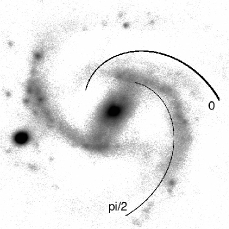
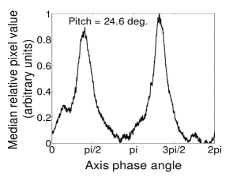
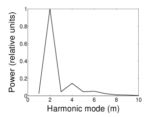
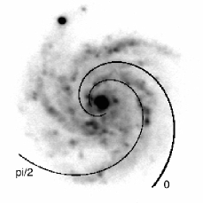
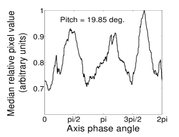
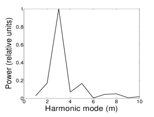
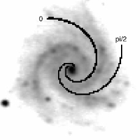
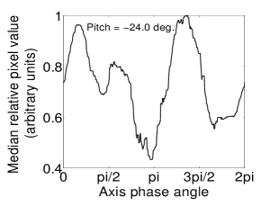
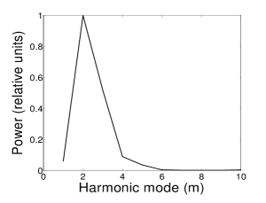
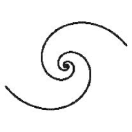
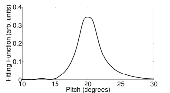
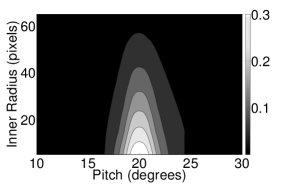
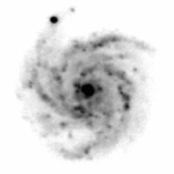
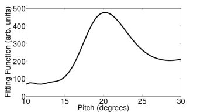
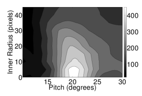
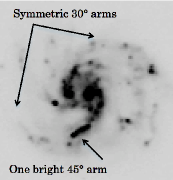
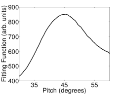
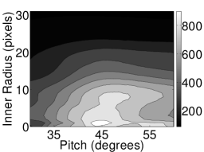
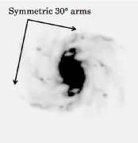
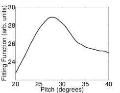
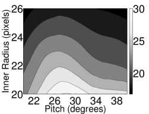
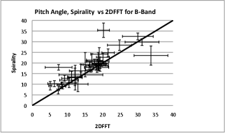
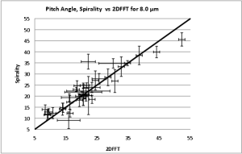
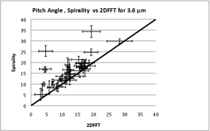
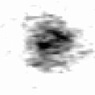
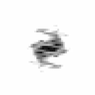
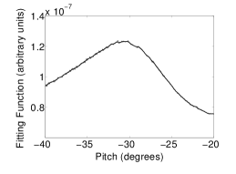
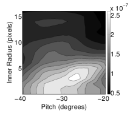
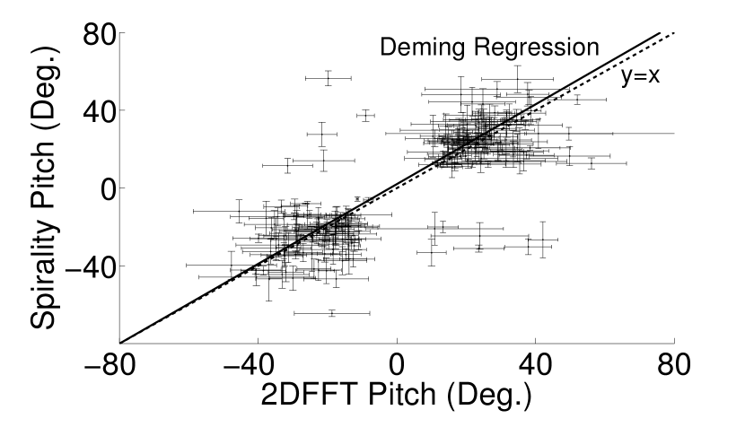
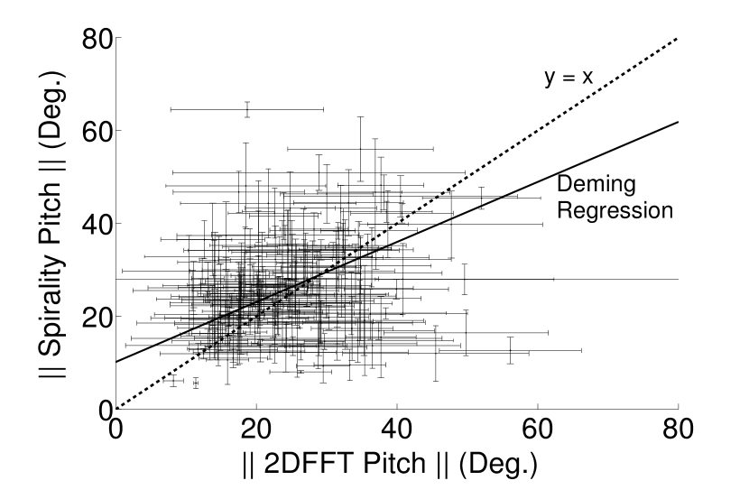
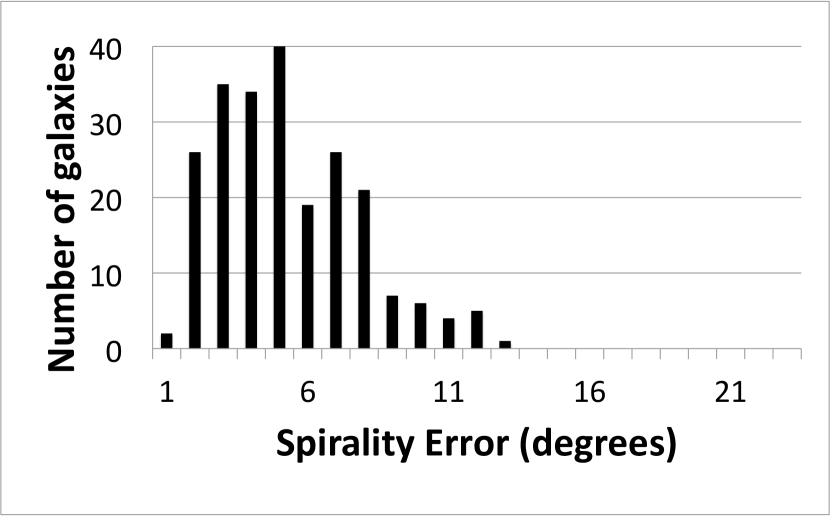
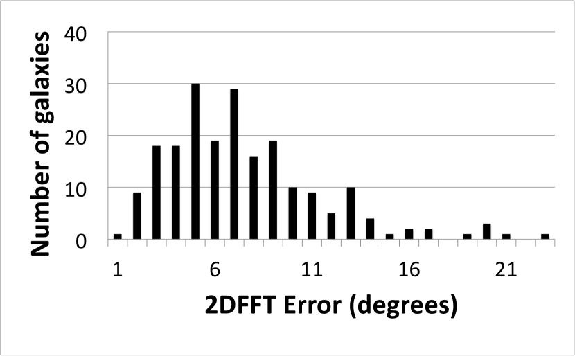
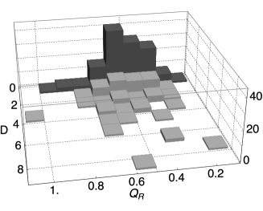
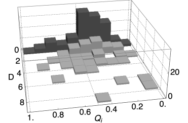
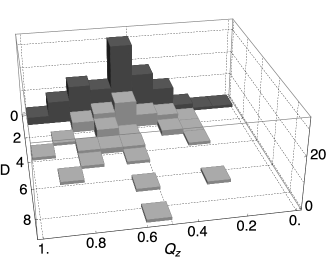
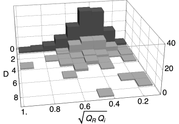
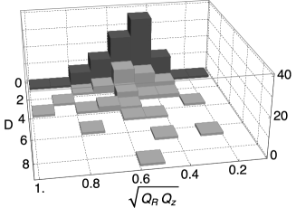
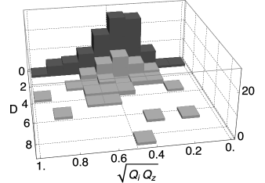
References
- (1)
- (2)
- Kendall et al. (2011) Kendall, S., Kennicutt, R. C., & Clarke, C. 2011, MNRAS, 414, 538
- Kennicutt (1981) Kennicutt, Jr., R. C. 1981, AJ, 86, 1847
- Ma (2001) Ma, J. 2001, Chinese Journal of Astronomy and Astrophysics, 1, 395
- Martínez-García et al. (2014) Martínez-García, E. E., Puerari, I., Rosales-Ortega, F. F., González-Lópezlira, R. A., Fuentes-Carrera, I., & Luna, A. 2014, ApJ, 793, L19
- Puerari et al. (2014) Puerari, I., Elmegreen, B. G., & Block, D. L. 2014, AJ, 148, 133
- Athanassoula et al. (2010) Athanassoula, E., Romero-Gómez, M., Bosma, A., & Masdemont, J. J. 2010, MNRAS, 407, 1433
- Berrier et al. (2013) Berrier, J. C., Davis, B. L., Kennefick, D., Kennefick, J. D., Seigar, M. S., Barrows, R. S., Hartley, M., Shields, D., Bentz, M. C., & Lacy, C. H. S. 2013, ApJ, 769, 132
- Berrier & Sellwood (2015) Berrier, J. C. & Sellwood, J. A. 2015, ApJ, 799, 213
- Davis et al. (2012) Davis, B. L., Berrier, J. C., Shields, D. W., Kennefick, J., Kennefick, D., Seigar, M. S., Lacy, C. H. S., & Puerari, I. 2012, ApJS, 199, 33
- Davis et al. (2015) Davis, B. L., Kennefick, D., Kennefick, J., Westfall, K. B., Shields, D. W., Flatman, R., Hartley, M. T., Berrier, J. C., Martinsson, T. P. K., & Swaters, R. A. 2015, ApJ, 802, L13
- Davis & Hayes (2014) Davis, D. R. & Hayes, W. B. 2014, ApJ, 790, 87
- de Vaucouleurs et al. (1991) de Vaucouleurs, G., de Vaucouleurs, A., Corwin, Jr., H. G., Buta, R. J., Paturel, G., & Fouqué, P. 1991, Third Reference Catalogue of Bright Galaxies. Volume I: Explanations and references. Volume II: Data for galaxies between 0h and 12h. Volume III: Data for galaxies between 12h and 24h.
- D’Onghia (2015) D’Onghia, E. 2015, ApJ, 808, L8
- Elmegreen & Elmegreen (2014) Elmegreen, D. M. & Elmegreen, B. G. 2014, ApJ, 781, 11
- Giavalisco et al. (2004) Giavalisco, M., Ferguson, H. C., Koekemoer, A. M., Dickinson, M., Alexander, D. M., Bauer, F. E., Bergeron, J., Biagetti, C., Brandt, W. N., Casertano, S., Cesarsky, C., Chatzichristou, E., Conselice, C., Cristiani, S., Da Costa, L., Dahlen, T., de Mello, D., Eisenhardt, P., Erben, T., Fall, S. M., Fassnacht, C., Fosbury, R., Fruchter, A., Gardner, J. P., Grogin, N., Hook, R. N., Hornschemeier, A. E., Idzi, R., Jogee, S., Kretchmer, C., Laidler, V., Lee, K. S., Livio, M., Lucas, R., Madau, P., Mobasher, B., Moustakas, L. A., Nonino, M., Padovani, P., Papovich, C., Park, Y., Ravindranath, S., Renzini, A., Richardson, M., Riess, A., Rosati, P., Schirmer, M., Schreier, E., Somerville, R. S., Spinrad, H., Stern, D., Stiavelli, M., Strolger, L., Urry, C. M., Vandame, B., Williams, R., & Wolf, C. 2004, ApJ, 600, L93
- Gonzalez & Graham (1996) Gonzalez, R. A. & Graham, J. R. 1996, ApJ, 460, 651
- Grosbol & Patsis (1998) Grosbol, P. J. & Patsis, P. A. 1998, A&A, 336, 840
- Guo et al. (2015) Guo, Y., Ferguson, H. C., Bell, E. F., Koo, D. C., Conselice, C. J., Giavalisco, M., Kassin, S., Lu, Y., Lucas, R., Mandelker, N., McIntosh, D. M., Primack, J. R., Ravindranath, S., Barro, G., Ceverino, D., Dekel, A., Faber, S. M., Fang, J. J., Koekemoer, A. M., Noeske, K., Rafelski, M., & Straughn, A. 2015, ApJ, 800, 39
- Kermack & Haldane (1950) Kermack, K. A. & Haldane, J. B. S. 1950, Biometrika, 37, pp. 30
- Lin & Shu (1964) Lin, C. C. & Shu, F. H. 1964, ApJ, 140, 646
- Martinsson et al. (2013) Martinsson, T. P. K., Verheijen, M. A. W., Westfall, K. B., Bershady, M. A., Andersen, D. R., & Swaters, R. A. 2013, A&A, 557, A131
- Nilson (1973) Nilson, P. 1973, Uppsala general catalogue of galaxies
- Saraiva Schroeder et al. (1994) Saraiva Schroeder, M. F., Pastoriza, M. G., Kepler, S. O., & Puerari, I. 1994, A&AS, 108, 41
- Seigar et al. (2008) Seigar, M. S., Kennefick, D., Kennefick, J., & Lacy, C. H. S. 2008, ApJ, 678, L93
- York (1966) York, D. 1966, Canadian Journal of Physics, 44, 1079